There are two Pokedexes: the Borrius Pokedex, and the National Pokedex. The Borrius Pokedex contains 498 Pokémon, and the National Pokedex expands that to 809 Pokémon. However, there are Gen 8 Pokémon in the game, including Galarian and Hisuian forms of earlier generation Pokémon, and this means the true total is 905 Pokémon available in Pokémon Unbound.
To access Generation 8 Pokémon, you need to be in the Post-Game, and use a Mystery Gift to give yourself any Gen 8 Pokémon. These are all listed on our Mystery Gift page, and listed in the table below.
Once you have one of those Pokémon registered, other Pokémon in the generation will be able to be caught via DexNav (once only) if you’re in the right area.
All Pokémon Locations
| Pokémon Locations | ||||
|---|---|---|---|---|
| NAT DEX | BOR DEX |
Name Type |
Image |
Location Method |
| 001 | – |
Bulbasaur Grass/Poison |
Magnolia Cafe Egg Lady, randomly obtained |
|
| 002 | – |
Ivysaur Grass/Poison |
Evolution Bulbasaur (Lv.16) |
|
| 003 | – |
Venusaur Grass/Poison |
Evolution Ivysaur (Lv.32) |
|
| 004 | – |
Charmander Fire |
Magnolia Cafe Egg Lady, randomly obtained |
|
| 005 | – |
Charmeleon Fire |
Evolution Charmander (Lv.16) |
|
| 006 | – |
Charizard Fire/Flying |
Evolution Charmeleon (Lv.36) |
|
| 007 | – |
Squirtle Water |
Magnolia Cafe Egg Lady, randomly obtained |
|
| 008 | – |
Wartortle Water |
Evolution Squirtle (Lv.16) |
|
| 009 | – |
Blastoise Water |
Evolution Wartortle (Lv.36) |
|
| 010 | 093 |
Caterpie Bug |
Grim Woods Long Grass (Day) Vivill Woods Long Grass (Day) |
|
| 011 | 094 |
Metapod Bug |
Vivill Woods Long Grass (Day) Evolution Caterpie (Lv.7) |
|
| 012 | 095 |
Butterfree Bug/Flying |
Evolution Metapod (Lv.10) |
|
| 013 | 096 |
Weedle Bug/Poison |
Grim Woods Long Grass (Night) Vivill Woods Long Grass (Night) |
|
| 014 | 097 |
Kakuna Bug/Poison |
Vivill Woods Long Grass (Night) Evolution Weedle (Lv.7) |
|
| 015 | 098 |
Beedrill Bug/Poison |
Evolution Kakuna (Lv.10) |
|
| 016 | 467 |
Pidgey Normal/Flying |
Breeding Pidgeotto |
|
| 017 | 468 |
Pidgeotto Normal/Flying |
Route 17 Long Grass (Day) Evolution Pidgey (Lv.18) |
|
| 018 | 469 |
Pidgeot Normal/Flying |
Evolution Pidgeotto (Lv.36) |
|
| 019 | 039 |
Rattata Normal |
Route 2 Long Grass (Night) |
|
|
Alolan Rattata Dark/Normal |
 |
Route 7 Long Grass (Night) |
||
| 020 | 040 |
Raticate Normal |
 |
Antisis Sewers Interior Evolution Rattata (Lv.20) |
|
Alolan Raticate Dark/Normal |
 |
Route 7 Long Grass (Night) Evolution Alolan Rattata (Lv.20, Night) |
||
| 021 | 239 |
Spearow Normal/Flying |
 |
Route 9 Long Grass (Day and Night) |
| 022 | 240 |
Fearow Normal/Flying |
 |
Evolution Spearow (Lv.20) |
| 023 | 123 |
Ekans Poison |
Route 4 Long Grass (Day and Night) |
|
| 024 | 124 |
Arbok Poison |
Evolution Ekans (Lv.22) |
|
| 025 | 447 |
Pikachu Electric |
 |
Vivill Woods Swarm Evolve Pichu (Max Happiness) |
| 026 | 448 |
Raichu Electric |
Evolve Pikachu (Thunder Stone) |
|
|
Alolan Raichu Electric/Psychic |
Evolve Pikachu (Thunder Stone on a beach) |
|||
| 027 | 030 |
Sandshrew Ground |
 |
Breeding Sandslash |
|
Alolan Sandshrew Ice/Steel |
Icicle Cave Hidden Valley Long Grass (Day and Night) after Mission #067 The Food Thief |
|||
| 028 | 031 |
Sandslash Ground |
Great Desert Sand (Day and Night) Evolution Sandshrew (Lv.22) |
|
|
Alolan Sandslash Ice/Steel |
Evolution Alolan Sandshrew (Ice Stone) |
|||
| 029 | 161 |
Nidoran (F) Poison |
Route 5 Long Grass (Day and Night) |
|
| 030 | 162 |
Nidorina Poison |
Evolve Nidoran (F) (Lv.16) |
|
| 031 | 163 |
Nidoqueen Poison/Ground |
Evolve Nidorina (Moon Stone) |
|
| 032 | 158 |
Nidoran (M) Poison |
Route 5 Long Grass (Day and Night) |
|
| 033 | 159 |
Nidorino Poison |
Evolve Nidoran (M) (Lv.16) |
|
| 034 | 160 |
Nidoking Poison/Ground |
 |
Evolve Nidorino (Moon Stone) |
| 035 | – |
Clefairy Fairy |
 |
Crater Town Hidden Grotto, behind bookshelf in Pokemon Center Evolution Cleffa (Max Happiness) |
| 036 | – |
Clefable Fairy |
Evolution Clefairy (Moon Stone) |
|
| 037 | 150 |
Vulpix Fire |
Cinder Volcano Swarm |
|
|
Alolan Vulpix Ice |
Mission Reward Mission #043: Ninetales of Snow |
|||
| 038 | 151 |
Ninetales Fire |
 |
Evolution Vulpix (Fire Stone) |
|
Alolan Ninetales Ice/Fairy |
Evolution Alolan Vulpix (Ice Stone) |
|||
| 039 | – |
Jigglypuff Normal/Fairy |
Victory Road Grass Maze Area Long Grass (Day and Night) |
|
| 040 | – |
Wigglytuff Normal/Fairy |
 |
Evolution Jigglypuff (Moon Stone) |
| 041 | 009 |
Zubat Poison/Flying |
Route 5 Long Grass (Night) Icicle Cave, KBT Expressway Cave |
|
| 042 | 010 |
Golbat Poison/Flying |
 |
Icicle Cave B1F, Icy Hole, Cliff Cave, Rift Cave, Antisis Sewers, Victory Road Caves, Kyurem’s Cave Cave Evolution Zubat (Lv.22) |
| 043 | 409 |
Oddish Grass/Poison |
Route 14 Long Grass (Night) |
|
| 044 | 410 |
Gloom Grass/Poison |
Route 14, Cootes Bog Long Grass (Night) Evolution Oddish (Lv.21) |
|
| 045 | 411 |
Vileplume Grass/Poison |
Evolution Gloom (Leaf Stone) |
|
| 046 | 440 |
Paras Bug/Grass |
Vivill Woods Mushroom Encounter |
|
| 047 | 441 |
Parasect Bug/Grass |
Evolution Paras (Lv.24) |
|
| 048 | 170 |
Venonat Bug/Poison |
Route 5 Long Grass (Night) |
|
| 049 | 171 |
Venomoth Bug/Poison |
 |
Evolution Venonat (Lv.31) |
| 050 | – |
Diglett Ground |
Lost Tunnel Cave |
|
|
Alolan Diglett Ground/Steel |
Safari Zone Medium, Hard |
|||
| 051 | – |
Dugtrio Ground |
Lost Tunnel Cave Evolution Diglett (Lv.26) |
|
|
Alolan Dugtrio Ground/Steel |
Safari Zone Insane Evolution Alolan Diglett (Lv.26) |
|||
| 052 | – |
Meowth Normal |
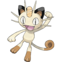 |
Breeding Persian |
|
Alolan Meowth Dark |
Safari Zone Easy |
|||
|
Galarian Meowth Steel |
Requires Gen 8 Activation Valley Cave Cave |
|||
| 053 | – |
Persian Normal |
Route 18 Long Grass (Day and Night) Evolution Meowth (Lv.28) |
|
|
Alolan Persian Dark |
 |
Evolution Alolan Meowth (Max Happiness) |
||
| 054 | 329 |
Psyduck Water |
Grim Woods, Valley Cave, Vivill Woods, Tehl Town, Epidimy Town Good Rod / Surf |
|
| 055 | 330 |
Golduck Water |
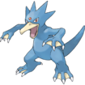 |
Grim Woods, Valley Cave, Vivill Woods, Crystal Peak, Tehl Town, Epidimy Town Super Rod / Surf |
| 056 | 127 |
Mankey Fighting |
Route 4 Long Grass (Day and Night) |
|
| 057 | 128 |
Primeape Fighting |
 |
Evolution Mankey (Lv.28) |
| 058 | 164 |
Growlithe Fire |
Route 5 Long Grass (Day and Night) |
|
|
Hisuian Growlithe Fire/Rock |
Unbound Cloud Trade |
|||
| 059 | 165 |
Arcanine Fire |
Evolution Growlithe (Fire Stone) |
|
|
Hisuian Arcanine Fire/Rock |
Post-Game Mystery Gift Code 1WX2KX7RA1HT Evolution Hisuian Growlithe (Fire Stone) |
|||
| 060 | 325 |
Poliwag Water |
 |
Route 3 Long Grass (Day and Night) Polder Town, Cootes Bog Old Rod Tarmigan Town, Dehara City Good Rod / Surf |
| 061 | 326 |
Poliwhirl Water |
Tarmigan Town, Dehara City Super Rod / Surf Polder Town, Cootes Bog Good Rod Evolution Poliwag (Lv.25) |
|
| 062 | 327 |
Poliwrath Water/Fighting |
Evolution Poliwhirl (Water Stone) |
|
| 063 | 211 |
Abra Psychic |
Route 7 Long Grass (Day and Night) |
|
| 064 | 212 |
Kadabra Psychic |
Evolution Abra (Lv.16) |
|
| 065 | 213 |
Alakazam Psychic |
Evolution Kadabra (Link Stone) |
|
| 066 | 318 |
Machop Fighting |
Cliff Cave Cave |
|
| 067 | 319 |
Machoke Fighting |
 |
Cliff Cave Cave Evolution Machop (Lv. 28) |
| 068 | 320 |
Machamp Fighting |
Evolution Machoke (Link Stone) |
|
| 069 | 406 |
Bellsprout Grass/Poison |
Route 14 Long Grass (Day) |
|
| 070 | 407 |
Weepinbell Grass/Poison |
Route 14, Cootes Bog Long Grass (Day) |
|
| 071 | 408 |
Victreebel Grass/Poison |
Evolution Weepinbell (Leaf Stone) |
|
| 072 | 388 |
Tentacool Water/Poison |
 |
Routes 2-7, 11-18, various Towns Surf |
| 073 | 389 |
Tentacruel Water/Poison |
 |
Routes 2-7, 11-18, various Towns Surf |
| 074 | 142 |
Geodude Rock/Ground |
Cinder Volcano, KBT Expressway, Valley Cave, Epidimy Town, Lost Tunnel, Great Desert, Ruins of Void, Routes 13, 14, 16, 17, 18 Cave / Rock Smash |
|
|
Alolan Geodude Rock/Electric |
 |
Cliff Cave Cave Thundercap Mountain Rock Smash |
||
| 075 | 143 |
Graveler Rock/Ground |
Cinder Volcano, KBT Expressway, Epidimy Town, Lost Tunnel, Great Desert, Crystal Peak, Victory Road, Tomb of Borrius Cave / Rock Smash Evolution Geodude (Lv.25) |
|
|
Alolan Graveler Rock/Electric |
Cliff Cave Cave Thundercap Mountain Rock Smash Evolution Alolan Geodude (Lv.25) |
|||
| 076 | 144 |
Golem Rock/Ground |
 |
Evolution Graveler (Link Stone) |
|
Alolan Golem Rock/Electric |
 |
Evolution Alolan Graveler (Link Stone) |
||
| 077 | 336 |
Ponyta Fire |
Route 12 Long Grass (Day and Night) |
|
|
Galarian Ponyta Psychic |
Requires Gen 8 Activation Route 12 Long Grass (Day and Night) |
|||
| 078 | 337 |
Rapidash Fire |
Evolution Ponyta (Lv.40) |
|
|
Galarian Rapidash Psychic/Fairy |
Requires Gen 8 Activation Evolution Galarian Ponyta (Lv.40) |
|||
| 079 | 403 |
Slowpoke Water/Psychic |
Route 3, Route 14 Long Grass (Day and Night) Tarmigan Town Surf |
|
|
Galarian Slowpoke Water/Psychic |
Requires Gen 8 Activation Routes 13, 14 Surfing |
|||
| 080 | 404 |
Slowbro Water/Psychic |
 |
Evolution Slowpoke (Lv.37) |
|
Galarian Slowbro Poison/Psychic |
Requires Gen 8 Activation Evolution Galarian Slowpoke (Galarica Cuff) |
|||
| 081 | 295 |
Magnemite Electric/Steel |
Thundercap Mountain Cave |
|
| 082 | 296 |
Magneton Electric/Steel |
 |
Thundercap Mountain Cave Evolution Magnemite (Lv.30) |
| 083 | – |
Farfetch’d Normal/Flying |
Route 18 Long Grass (Day) |
|
|
Galarian Farfetch’d Fighting |
Requires Gen 8 Activation Route 17 Long Grass (Day) |
|||
| 084 | 207 |
Doduo Normal/Flying |
Route 7 Long Grass (Day) |
|
| 085 | 208 |
Dodrio Normal/Flying |
Evolution Doduo (Lv.31) |
|
| 086 | 277 |
Seel Water |
Icicle Cave, Frost Mountain, Icy Hole, Kyurem’s Cave Surf / Good Rod |
|
| 087 | 278 |
Dewgong Water/Ice |
 |
Icicle Cave, Frost Mountain, Icy Hole, Kyurem’s Cave Surf / Super Rod Evolution Seel (Lv.34) |
| 088 | 459 |
Grimer Poison |
Antisis Sewers Interior / Old Rod / Good Rod / Surf |
|
|
Alolan Grimer Poison/Dark |
Mission Reward Mission #057: Supply and Demand |
|||
| 089 | 460 |
Muk Poison |
Antisis Sewers Interior / Super Rod / Surf Evolution Grimer (Lv.38) |
|
|
Alolan Muk Poison/Dark |
Evolution Alolan Grimer (Lv.38) |
|||
| 090 | 279 |
Shellder Water |
 |
Route 2, 3, 14, 15, Icicle Cave, Frost Mountain, Ruins of Void, Icy Hole, Kyurem’s Cave, Dresco Town, Vivill Town Good Rod / Super Rod |
| 091 | 280 |
Cloyster Water/Ice |
Route 3, 14, 15, Icicle Cave, Frost Mountain, Icy Hole, Vivill Town Super Rod |
|
| 092 | 104 |
Gastly Ghost/Poison |
Grim Woods Long Grass (Day and Night) |
|
| 093 | 105 |
Haunter Ghost/Poison |
Rift Cave Cave Evolution Gastly (Lv.25) |
|
| 094 | 106 |
Gengar Ghost/Poison |
 |
Evolution Haunter (Link Stone) |
| 095 | 227 |
Onix Rock/Ground |
Frost Mountain, Cliff Cave, Crystal Peak Cave |
|
| 096 | 219 |
Drowzee Psychic |
Route 7 Long Grass (Night) |
|
| 097 | 220 |
Hypno Psychic |
Evolution Drowzee (Lv.26) |
|
| 098 | 070 |
Krabby Water |
Route 3 Good Rod Route 2, 13, 14, 16, 17, 18, Thundercap Mountain (Antisis Side) Rock Smash |
|
| 099 | 071 |
Kingler Water |
Route 3 Super Rod Route 2, 13, 14, 16, 17, 18, Thundercap Mountain Rock Smash Evolution Krabby (Lv.28) |
|
| 100 | – |
Voltorb Electric |
 |
Dehara City Gym Encounter |
|
Hisuian Voltorb Electric/Grass |
Unbound Cloud Trade |
|||
| 101 | – |
Electrode Electric |
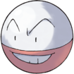 |
Dehara City Gym Encounter Trade Blizzard City, for Onix Evolution Voltorb (Lv.30) |
|
Hisuian Electrode Electric/Grass |
Post-Game Mystery Gift Code 4BN3PR8SR9ED Evolution Hisuian Voltorb (Leaf Stone) |
|||
| 102 | 264 |
Exeggcute Grass/Psychic |
Route 11 Long Grass (Day and Night) Safari Zone Hard, Insane |
|
| 103 | 265 |
Exeggutor Grass/Psychic |
Evolution Exeggcute (Leaf Stone) |
|
|
Alolan Exeggutor Grass/Dragon |
Evolution Exeggcute caught in Safari Zone (Leaf Stone) |
|||
| 104 | 298 |
Cubone Ground |
 |
Thundercap Mountain Cave Safari Zone Easy |
| 105 | 299 |
Marowak Ground |
 |
Thundercap Mountain Cave Evolution Cubone (Lv.28, Day) |
|
Alolan Marowak Fire/Ghost |
 |
Evolution Cubone (Lv.28, Night) |
||
| 106 | – |
Hitmonlee Fighting |
Evolution Tyrogue (Lv.20, if Atk > Def) |
|
| 107 | – |
Hitmonchan Fighting |
Evolution Tyrogue (Lv.20, if Def > Atk) |
|
| 108 | 156 |
Lickitung Normal |
Route 5 Long Grass (Day and Night) |
|
| 109 | 461 |
Koffing Poison |
Antisis Sewers Interior |
|
| 110 | 462 |
Weezing Poison |
Antisis Sewers Interior Evolution Koffing (Lv.35) |
|
|
Galarian Weezing Poison/Fairy |
 |
Requires Gen 8 Activation Antisis Sewers Interior |
||
| 111 | – |
Rhyhorn Ground/Rock |
Safari Zone Easy, Medium |
|
| 112 | – |
Rhydon Ground/Rock |
 |
Safari Zone Hard, Insane Evolution Rhyhorn (Lv.42) |
| 113 | – |
Chansey Normal |
Victory Road Maze Area (tall grass)
Evolution |
|
| 114 | 449 |
Tangela Grass |
Route 16 Long Grass (Day and Night) |
|
| 115 | – |
Kangaskhan Normal |
 |
Safari Zone Medium, Hard, Insane |
| 116 | 377 |
Horsea Water |
Route 14, 15, 16, 17, 18, Ruins of Void, Gurun Town, Antisis City, Seaport City, Vivill Town Good Rod |
|
| 117 | 378 |
Seadra Water |
Route 14, 15, 16, 17, 18, Ruins of Void, Gurun Town, Antisis City, Seaport City, Vivill Town Super Rod Evolution Horsea (Lv.32) |
|
| 118 | 285 |
Goldeen Water |
Route 6, 7, 9, Auburn Waterway, Tehl Town Good Rod |
|
| 119 | 286 |
Seaking Water |
Route 6, 7, 9, Auburn Waterway, Tehl Town Super Rod Evolution Goldeen (Lv.33) |
|
| 120 | 281 |
Staryu Water |
Route 2, 3, 4, 5, Dresco Town, Dehara City Good Rod / Super Rod |
|
| 121 | 282 |
Starmie Water/Psychic |
 |
Route 2, 3, 4, 5, Dresco Town, Dehara City Super Rod Evolution Staryu (Water Stone) |
| 122 | 222 |
Mr. Mime Psychic/Fairy |
 |
Route 7 Swarm |
|
Galarian Mr. Mime Ice/Psychic |
Requires Gen 8 Activation Route 8 Long Grass (Day and Night) |
|||
| 123 | – |
Scyther Bug/Flying |
Headbutt Redwood Village and Forest |
|
| 124 | 018 |
Jynx Ice/Psychic |
Icicle Cave, Icy Hole, Victory Road, Kyurem’s Cave Cave Evolution Smoochum (Lv.30) |
|
| 125 | 304 |
Electabuzz Electric |
 |
Thundercap Mountain Cave Evolution Elekid (Lv.30) |
| 126 | 147 |
Magmar Fire |
Cinder Volcano Shadow Base, Victory Road Cave Evolution Magby (Lv.30) |
|
| 127 | – |
Pinsir Bug |
 |
Headbutt Redwood Village and Forest |
| 128 | – |
Tauros Normal |
 |
Magnolia Fields Long Grass (Day and Night) Safari Zone Medium, Hard, Insane |
| 129 | 223 |
Magikarp Water |
 |
All Water Old Rod |
| 130 | 224 |
Gyarados Water/Flying |
Route 4, 5, 6, 7, 12, 15, 18, Dresco Town, Valley Cave, Auburn Waterway, Tehl Town, Ruins of Void, Vivill Town, Antisis City, Magnolia Fields, Victory Road, Cube Corp. Super Rod |
|
| 131 | 390 |
Lapras Water/Ice |
 |
Icicle Cave, Icy Hole, Frost Mountain, Kyurem’s Cave Surf Route 17, Seaport City Super Rod |
| 132 | – |
Ditto Normal |
Route 5, 10, Auburn Waterway, Cube Corp. Long Grass (Day and Night) |
|
| 133 | 355 |
Eevee Normal |
 |
Dehara City Game Corner 1500 Coins |
| 134 | 356 |
Vaporeon Water |
 |
Evolution Eevee (Water Stone) |
| 135 | 357 |
Jolteon Electric |
Evolution Eevee (Thunder Stone) |
|
| 136 | 358 |
Flareon Fire |
Evolution Eevee (Fire Stone) |
|
| 137 | 367 |
Porygon Normal |
Dehara City Game Corner 9999 Coins |
|
| 138 | – |
Omanyte Rock/Water |
Fossil Helix Fossil (Great Desert, Rock Smash, Moleman) |
|
| 139 | – |
Omastar Rock/Water |
Evolution Omanyte (Lv.40) |
|
| 140 | – |
Kabuto Rock/Water |
 |
Fossil Dome Fossil (Great Desert, Rock Smash, Moleman) |
| 141 | – |
Kabutops Rock/Water |
Evolution Kabuto (Lv.40) |
|
| 142 | – |
Aerodactyl Rock/Water |
Fossil Old Amber (Great Desert, Rock Smash, Moleman) |
|
| 143 | – |
Snorlax Normal |
Redwood Forest Encounter |
|
| 144 | 483 |
Articuno Ice/Flying |
Frozen Heights Summit Encounter |
|
|
Galarian Articuno Psychic/Flying |
Post-Game Mystery Gift Code 2XH4TC5JY4MG |
|||
| 145 | 484 |
Zapdos Electric/Flying |
 |
Thundercap Mountain Summit Encounter |
|
Galarian Zapdos Fighting/Flying |
Post-Game Mystery Gift Code 9TA2WT6TW5AP |
|||
| 146 | 485 |
Moltres Fire/Flying |
Cinder Volcano Summit Encounter |
|
|
Galarian Moltres Dark/Flying |
Post-Game Mystery Gift Code 4NV7CX6YX1SD |
|||
| 147 | – |
Dratini Dragon |
 |
Breeding Breed a Dragonair |
| 148 | – |
Dragonair Dragon |
Crystal Peak (Surfing) Evolve a Dratini (Lv.30) |
|
| 149 | – |
Dragonite Dragon/Flying |
Evolution Dragonair (Lv.50) |
|
| 150 | – |
Mewtwo Psychic |
Post-Game Mystery Gift Code 6ZT5ZX7RN4KK |
|
| 151 | – |
Mew Psychic |
Mission Reward Mission #017: Darwin Was Right |
|
| 152 | – |
Chikorita Grass |
Breeding Bayleef |
|
| 153 | – |
Bayleef Grass |
Route 18 Swarm |
|
| 154 | – |
Meganium Grass |
 |
Evolution Bayleef (Lv.32) |
| 155 | – |
Cyndaquil Fire |
Breeding Quilava |
|
| 156 | – |
Quilava Fire |
Magnolia Fields Swarm |
|
| 157 | – |
Typhlosion Fire |
 |
Evolution Quilava (Lv.36) |
|
Hisuian Typhlosion Fire/Ghost |
Evolution Quilava (Lv.36, holding Hisui Rock) |
|||
| 158 | – |
Totodile Water |
Breeding Croconaw |
|
| 159 | – |
Croconaw Water |
Cootes Bog Swarm |
|
| 160 | – |
Feraligatr Water |
Evolution Croconaw (Lv.30) Encounter Mission #051: Protector of the Swamp |
|
| 161 | 076 |
Sentret Normal |
Route 3 Swarm |
|
| 162 | 077 |
Furret Normal |
Route 8 Long Grass (Day and Night) Evolution Sentret (Lv.15) |
|
| 163 | 035 |
Hoothoot Normal/Flying |
 |
Routes 2, 7, 12 Long Grass (Night) |
| 164 | 036 |
Noctowl Normal/Flying |
Routes 12, 17, 18, Magnolia Fields Long Grass (Night) Evolution Hoothoot (Lv.20) |
|
| 165 | 191 |
Ledyba Bug/Flying |
Route 6 Long Grass (Day) |
|
| 166 | 192 |
Ledian Bug/Flying |
Route 6, Redwood Forest Long Grass (Day) Evolution Ledyba (Lv.18) |
|
| 167 | 193 |
Spinarak Bug/Poison |
Route 6 Long Grass (Night) |
|
| 168 | 194 |
Ariados Bug/Poison |
 |
Route 6, Redwood Forest Long Grass (Night) Evolution Spinarak (Lv.22) |
| 169 | 011 |
Crobat Poison/Flying |
 |
Evolution Golbat (Max Happiness) |
| 170 | 316 |
Chinchou Water/Electric |
Thundercap Mountain Good Rod / Surf Route 14, 16, 17, Ruins of Void Underwater |
|
| 171 | 317 |
Lanturn Water/Electric |
 |
Thundercap Mountain Super Rod / Surf Route 14, 16, 17, Ruins of Void Underwater Evolution Chinchou (Lv.27) |
| 172 | 446 |
Pichu Electric |
Breeding Pikachu |
|
|
Spiky-Eared Pichu Electric |
Seaport City Breeder School Show a Pichu to a Breeder |
|||
| 173 | – |
Cleffa Fairy |
Breeding Clefairy |
|
| 174 | – |
Igglybuff Normal/Fairy |
Breeding Jigglypuff |
|
| 175 | – |
Togepi Fairy |
Egg Gift Old Lady, Fallshore City |
|
| 176 | – |
Togetic Fairy/Flying |
Evolution Togepi (Max Happiness) |
|
| 177 | – |
Natu Psychic/Flying |
Safari Zone Easy |
|
| 178 | – |
Xatu Psychic/Flying |
 |
Safari Zone Medium Evolution Natu (Lv.25) |
| 179 | 214 |
Mareep Electric |
Route 7 Long Grass (Day and Night) |
|
| 180 | 215 |
Flaaffy Electric |
Route 8 Long Grass (Day and Night) Evolution Mareep (Lv.15) |
|
| 181 | 216 |
Ampharos Electric |
Evolution Flaaffy (Lv.30) |
|
| 182 | 412 |
Bellossom Grass |
Evolution Gloom (Sun Stone) |
|
| 183 | 046 |
Marill Water/Fairy |
 |
Routes 9, 10, Auburn Waterway Long Grass (Day and Night) Route 9, Tehl Town, Victory Road Surf Evolution Azurill (High Friendship) |
| 184 | 047 |
Azumarill Water/Fairy |
 |
Route 9, Tehl Town, Victory Road Surf Evolution Marill (Lv.18) |
| 185 | – |
Sudowoodo Rock |
Route 18 Long Grass (Day and Night) |
|
| 186 | 328 |
Politoed Water |
 |
Tarmigan Town Surf Polder Town, Cootes Bog Super Rod Evolution Poliwhirl (King’s Rock) |
| 187 | 463 |
Hoppip Grass/Flying |
Breeding Skiploom Magnolia Cafe Egg Lady, randomly obtained |
|
| 188 | 464 |
Skiploom Grass/Flying |
Route 17 Long Grass (Day) Evolution Hoppip (Lv.18) |
|
| 189 | 465 |
Jumpluff Grass/Flying |
Evolution Skiploom (Lv.27) |
|
| 190 | – |
Aipom Normal |
Headbutt Redwood Village and Forest |
|
| 191 | 200 |
Sunkern Grass |
Route 6 Long Grass (Day) |
|
| 192 | 201 |
Sunflora Grass |
Evolution Sunkern (Sun Stone) |
|
| 193 | 168 |
Yanma Bug/Flying |
Route 5 Long Grass (Day) |
|
| 194 | 321 |
Wooper Water/Ground |
Cliff Cave Cave |
|
| 195 | 322 |
Quagsire Water/Ground |
Cliff Cave Cave Evolution Wooper (Lv.20) |
|
| 196 | 359 |
Espeon Psychic |
 |
Evolution Eevee (Max Happiness, Day) |
| 197 | 360 |
Umbreon Dark |
Evolution Eevee (Max Happiness, Night) |
|
| 198 | 154 |
Murkrow Dark/Flying |
 |
Route 5 Long Grass (Night) |
| 199 | 405 |
Slowking Water/Psychic |
 |
Evolution Slowpoke (King’s Rock) |
|
Galarian Slowking Poison/Psychic |
Requires Gen 8 Activation Evolution Galarian Slowpoke (Galarica Wreath) |
|||
| 200 | 323 |
Misdreavus Ghost |
 |
Cliff Cave Cave |
| 201 | – |
Unown Psychic |
 |
Tomb of Borrius Interior |
| 202 | – |
Wobbuffet Psychic |
 |
Safari Zone Medium, Hard, Insane Evolution Wynaut (Lv.15) |
| 203 | 451 |
Girafarig Normal/Psychic |
 |
Route 16 Long Grass (Day and Night) |
| 204 | – |
Pineco Bug |
Headbutt Redwood Village and Forest |
|
| 205 | – |
Forretress Bug/Steel |
Evolution Pineco (Lv.31) |
|
| 206 | 188 |
Dunsparce Normal |
Valley Cave Swarm |
|
| 207 | 186 |
Gligar Ground/Flying |
Valley Cave Cave |
|
| 208 | 228 |
Steelix Steel/Ground |
Cliff Cave Cave Evolution Onix (Metal Coat) |
|
| 209 | 338 |
Snubbull Fairy |
Route 12 Long Grass (Day and Night) |
|
| 210 | 339 |
Granbull Fairy |
Evolution Snubbull (Lv.23) |
|
| 211 | – |
Qwilfish Water/Poison |
Crystal Peak, Magnolia Fields Super Rod |
|
|
Hisuian Qwilfish Dark/Poison |
Unbound Cloud Trade |
|||
| 212 | – |
Scizor Bug/Steel |
Evolution Scyther (Metal Coat) |
|
| 213 | – |
Shuckle Bug/Rock |
 |
Icicle Cave, Cinder Volcano, Thundercap Mountain, Great Desert Rock Smash |
| 214 | – |
Heracross Bug/Fighting |
 |
Redwood Forest Long Grass (Day and Night) Headbutt Redwood Village and Forest |
| 215 | 229 |
Sneasel Dark/Ice |
Frost Mountain Cave Route 8, Frozen Forest Long Grass (Night) |
|
|
Hisuian Sneasel Fighting/Poison |
Unbound Cloud Trade |
|||
| 216 | – |
Teddiursa Normal |
Breeding Ursaring |
|
| 217 | – |
Ursaring Normal |
Redwood Forest Long Grass (Day and Night) Evolution Teddiursa (Lv.30) |
|
| 218 | 138 |
Slugma Fire |
Cinder Volcano, Victory Road Cave |
|
| 219 | 139 |
Magcargo Fire/Rock |
Cinder Volcano, Victory Road Lava Surf Evolution Slugma (Lv.38) |
|
| 220 | 022 |
Swinub Ice/Ground |
Icicle Cave Cave |
|
| 221 | 023 |
Piloswine Ice/Ground |
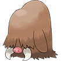 |
Icicle Cave, Icy Hole, Kyurem’s Cave, Victory Road Cave Evolution Swinub (Lv.33) |
| 222 | – |
Corsola Water/Rock |
Route 13, 14, 16, 17, 18, Thundercap Mountain Rock Smash Route 16, 17,18, Gurun Town, Seaport City Good Rod, Super Rod Route 16, 17 Underwater |
|
|
Galarian Corsola Ghost |
Requires Gen 8 Activation Breeding Cursola |
|||
| 223 | 287 |
Remoraid Water |
Route 6, 7, 11, 16, 17, 18 Fallshore City, Gurun Town, Antisis City, Thundercap Mountain, Seaport City Good Rod Route 16 Underwater |
|
| 224 | 288 |
Octillery Water |
Route 6, 7, 11, 16, 17, 18 Fallshore City, Gurun Town, Antisis City, Thundercap Mountain, Seaport City Super Rod Route 16 Underwater |
|
| 225 | 007 |
Delibird Ice/Flying |
Route 1 Long Grass (Day and Night) |
|
| 226 | 393 |
Mantine Water/Flying |
Route 14, 18, Ruins of Void, Gurun Town Surf Evolution Mantyke (level with a Remoraid in party) |
|
| 227 | – |
Skarmory Steel/Flying |
Crystal Peak Cave |
|
| 228 | 166 |
Houndour Dark/Fire |
Route 5 Long Grass (Night) |
|
| 229 | 167 |
Houndoom Dark/Fire |
Evolution Houndour (Lv.24) |
|
| 230 | 379 |
Kingdra Water/Dragon |
Ruins of Void, Gurun Town Super Rod Evolution Seadra (Dragon Scale) |
|
| 231 | 184 |
Phanpy Ground |
Valley Cave Cave |
|
| 232 | 185 |
Donphan Ground |
Route 9 Long Grass (Day and Night) Evolution Phanphy (Lv.25) |
|
| 233 | 368 |
Porygon2 Normal |
Evolution Porygon (Up-Grade) |
|
| 234 | 236 |
Stantler Normal |
Route 8 Swarm |
|
| 235 | 204 |
Smeargle Normal |
 |
Route 6 Swarm |
| 236 | – |
Tyrogue Fighting |
Breeding Hitmontop |
|
| 237 | – |
Hitmontop Fighting |
 |
Trade Epidimy Town, for Lickitung Evolution Tyrogue (Lv.20, Atk & Def Equal) |
| 238 | 017 |
Smoochum Ice/Psychic |
 |
Icicle Cave Cave |
| 239 | 303 |
Elekid Electric |
 |
Thundercap Mountain Cave Mission Reward Mission #071: The Rogue Electivire |
| 240 | 147 |
Magby Fire |
Cinder Volcano Cave |
|
| 241 | – |
Miltank Normal |
Magnolia Fields Long Grass (Day and Night) |
|
| 242 | – |
Blissey Normal |
Evolution Chansey (Max Happiness) |
|
| 243 | – |
Raikou Electric |
Post-Game Portal Ruins of Void Portal Room, then Roaming |
|
| 244 | – |
Entei Fire |
Post-Game Portal Ruins of Void Portal Room, then Roaming |
|
| 245 | – |
Suicune Water |
Post-Game Portal Ruins of Void Portal Room (Raikou and Entei in party) |
|
| 246 | – |
Larvitar Rock/Ground |
 |
Starter Acquire at Game Beginning or Shadow Base Post-Game or Rival’s House Post-Game |
| 247 | – |
Pupitar Rock/Ground |
Evolution Larvitar (Lv.30) |
|
| 248 | – |
Tyranitar Rock/Dark |
Evolution Larvitar (Lv.55) |
|
| 249 | – |
Lugia Psychic/Flying |
Post-Game Portal Ruins of Void Lower Basement (Raikou, Entei and Suicune in party) |
|
| 250 | – |
Ho-Oh Fire/Flying |
Post-Game Portal Ruins of Void Lower Basement (Raikou, Entei and Suicune in party) |
|
| 251 | – |
Celebi Psychic/Grass |
Redwood Village Encounter (Spiky-Eared Pichu in party) |
|
| 252 | – |
Treecko Grass |
 |
Safari Zone Easy, Medium |
| 253 | – |
Grovyle Grass |
Safari Zone Hard, Insane Evolution Treecko (Lv.16) |
|
| 254 | – |
Sceptile Grass |
Evolution Grovyle (Lv.36) |
|
| 255 | – |
Torchic Fire |
Safari Zone Easy, Medium |
|
| 256 | – |
Combusken Fire/Fighting |
Safari Zone Hard, Insane Evolution Torchic (Lv.16) |
|
| 257 | – |
Blaziken Fire/Flying |
Evolution Combusken (Lv.36) |
|
| 258 | – |
Mudkip Water |
Safari Zone Easy, Medium |
|
| 259 | – |
Marshtomp Water/Ground |
Safari Zone Hard, Insane Evolution Mudkip (Lv.16) |
|
| 260 | – |
Swampert Water/Ground |
Evolution Marshtomp (Lv.36) |
|
| 261 | 056 |
Poochyena Dark |
Route 2 Swarm |
|
| 262 | 057 |
Mightyena Dark |
 |
Evolution Poochyena (Lv.18) |
| 263 | 257 |
Zigzagoon Normal |
Route 6 Long Grass (Day and Night) |
|
|
Galarian Zigzagoon Dark/Normal |
Requires Gen 8 Activation Breeding Galarian Linoone or Galarian Obstagoon |
|||
| 264 | 258 |
Linoone Normal |
 |
Route 10 Long Grass (Day and Night) Evolution Zigzagoon (Lv.20) |
|
Galarian Linoone Dark/Normal |
Requires Gen 8 Activation Route 10 Long Grass (Day and Night) Evolution Galarian Zigzagoon (Lv.20) |
|||
| 265 | 428 |
Wurmple Bug |
Vivill Woods Long Grass (Day and Night) |
|
| 266 | 429 |
Silcoon Bug |
Vivill Woods Long Grass (Day and Night) Evolution Wurmple (Lv.7, random between Silcoon or Cascoon) |
|
| 267 | 430 |
Beautifly Bug/Flying |
Evolution Silcoon (Lv.10) |
|
| 268 | 431 |
Cascoon Bug |
Vivill Woods Long Grass (Day and Night) Evolution Wurmple (Lv.7, random between Silcoon or Cascoon) |
|
| 269 | 422 |
Dustox Bug/Poison |
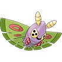 |
Evolution Cascoon (Lv.10) |
| 270 | 251 |
Lotad Water/Grass |
Route 10, Auburn Waterway Long Grass (Day and Night) |
|
| 271 | 252 |
Lombre Water/Grass |
Route 10, Auburn Waterway Long Grass (Day and Night) / Surf Fallshore City Gym Encounter Evolution Lotad (Lv.14) |
|
| 272 | 253 |
Ludicolo Water/Grass |
Evolution Lombre (Water Stone) |
|
| 273 | 099 |
Seedot Grass |
Grim Woods Long Grass (Day and Night) |
|
| 274 | 100 |
Nuzleaf Grass/Dark |
Evolution Seedot (Lv.14) |
|
| 275 | 101 |
Shiftry Grass/Dark |
 |
Evolution Nuzleaf (Leaf Stone) |
| 276 | 152 |
Taillow Normal/Flying |
Route 5 Long Grass (Day) |
|
| 277 | 153 |
Swellow Normal/Flying |
Evolution Taillow (Lv.14) |
|
| 278 | 058 |
Wingull Water/Flying |
Route 3 Long Grass (Day and Night) |
|
| 279 | 059 |
Pelipper Water/Flying |
 |
Route 14, 17 Long Grass (Day and Night) Route 2, 3, 4, 5, 6, 7, 11, 12, 13, 14, 15, 16, 17, 18, Ruins of Void, Dresco Town, Fallshore City, Dehara City, Gurun Town, Vivill Town, Antisis City, Seaport City, Magnolia Fields, Cube Corp. Surf Evolution Wingull (Lv.25) |
| 280 | 129 |
Ralts Psychic/Fairy |
Route 4 Long Grass (Day and Night) |
|
| 281 | 130 |
Kirlia Psychic/Fairy |
Evolution Ralts (Lv.20) |
|
| 282 | 131 |
Gardevoir Psychic/Fairy |
 |
Evolution Kirlia (Lv.30) |
| 283 | 068 |
Surskit Bug/Water |
Route 3 Long Grass (Night) Route 9, 10, Grim Woods, Auburn Waterway, Vivill Woods Surf |
|
| 284 | 069 |
Masquerain Bug/Flying |
Route 9, 10, Grim Woods, Auburn Waterway, Vivill Woods Surf Evolution Surskit (Lv.22) |
|
| 285 | 244 |
Shroomish Grass |
Route 9 Long Grass (Day and Night) |
|
| 286 | 245 |
Breloom Grass/Fighting |
 |
Evolution Shroomish (Lv.23) |
| 287 | – |
Slakoth Normal |
Breeding Vigoroth |
|
| 288 | – |
Vigoroth Normal |
Redwood Forest Long Grass (Day and Night) Evolution Slakoth (Lv.18) |
|
| 289 | – |
Slaking Normal |
Evolution Vigoroth (Lv.36) |
|
| 290 | – |
Nincada Bug/Ground |
Redwood Forest Swarm |
|
| 291 | – |
Ninjask Bug/Flying |
Evolution Nincada (Lv.20) |
|
| 292 | – |
Shedinja Bug/Ghost |
Evolution Nincada (Lv.20 with extra slot in party and an extra Pokeball) |
|
| 293 | – |
Whismur Normal |
 |
Breeding Loudred |
| 294 | – |
Loudred Normal |
Crystal Peak Cave Evolution Whismur (Lv.20) |
|
| 295 | – |
Exploud Normal |
 |
Evolution Loudred (Lv.40) |
| 296 | 012 |
Makuhita Fighting |
Icicle Cave, KBT Expressway Cave |
|
| 297 | 013 |
Hariyama Fighting |
Icicle Cave, Icy Hole, KBT Expressway, Kyurem’s Cave, Victory Road Cave Evolution Makuhita (Lv.24) |
|
| 298 | 045 |
Azurill Normal/Fairy |
Breeding Marill (with Sea Incense) Route 2 Long Grass (Day and Night) |
|
| 299 | 179 |
Nosepass Rock |
 |
KBT Expressway, Valley Cave, Frost Mountain, Thundercap Mountain Cave |
| 300 | – |
Skitty Normal |
 |
Safari Zone Easy |
| 301 | – |
Delcatty Normal |
 |
Evolution Skitty (Moon Stone) |
| 302 | 384 |
Sableye Dark/Ghost |
Ruins of Void Cave |
|
| 303 | 029 |
Mawile Steel/Fairy |
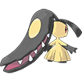 |
Icicle Cave Cave |
| 304 | 176 |
Aron Steel/Rock |
KBT Expressway, Valley Cave, Frost Mountain Cave |
|
| 305 | 177 |
Lairon Steel/Rock |
KBT Expressway, Lost Tunnel Cave Evolution Aron (Lv.32) |
|
| 306 | 178 |
Aggron Steel/Rock |
 |
Evolution Lairon (Lv.42) |
| 307 | 271 |
Meditite Fighting/Psychic |
Route 11 Long Grass (Day and Night) |
|
| 308 | 272 |
Medicham Fighting/Psychic |
Evolution Meditite (Lv.37) |
|
| 309 | 043 |
Electrike Electric |
Route 2 Long Grass (Day and Night) |
|
| 310 | 044 |
Manectric Electric |
Evolution Electrike (Lv.26) |
|
| 311 | – |
Plusle Electric |
 |
Safari Zone Easy |
| 312 | – |
Minun Electric |
Safari Zone Easy |
|
| 313 | 475 |
Volbeat Bug |
Route 17 Swarm |
|
| 314 | 476 |
Illumise Bug |
Route 17 Swarm |
|
| 315 | – |
Roselia Grass/Poison |
 |
Flower Paradise Yellow Flowers (Day and Night) Victory Road Long Grass (Day and Night) Evolution Budew (Max Happiness) |
| 316 | 273 |
Gulpin Poison |
 |
Route 11 Long Grass (Day and Night) Breeding Swalot |
| 317 | 274 |
Swalot Poison |
 |
Evolution Gulpin (Lv.26) |
| 318 | 290 |
Carvanha Water/Dark |
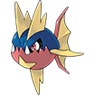 |
Route 12, 14, Fallshore City Good Rod |
| 319 | 291 |
Sharpedo Water/Dark |
 |
Route 12, 14, Fallshore City Super Rod Route 17 Underwater Evolution Carvanha (Lv.30) |
| 320 | 353 |
Wailmer Water |
 |
Route 12, 14, Magnolia Fields Good Rod |
| 321 | 354 |
Wailord Water |
Route 12, 14, Magnolia Fields Super Rod Evolution Wailmer (Lv.40) |
|
| 322 | 125 |
Numel Fire/Ground |
Route 4 Long Grass (Day and Night) Cinder Volcano Cave |
|
| 323 | 126 |
Camerupt Fire/Ground |
Cinder Volcano Shadow Base, Victory Road Cave Evolution Numel (Lv.33) |
|
| 324 | 145 |
Torkoal Fire |
Cinder Volcano Cave |
|
| 325 | 269 |
Spoink Psychic |
Route 11 Long Grass (Day and Night) |
|
| 326 | 270 |
Grumpig Psychic |
Evolution Spoink (Lv.32) |
|
| 327 | – |
Spinda Normal |
Safari Zone Medium, Hard |
|
| 328 | 424 |
Trapinch Ground |
 |
Breeding Vibrava Magnolia Cafe Egg Lady, randomly obtained |
| 329 | 425 |
Vibrava Ground/Dragon |
Great Desert Sands (Day and Night) Evolution Trapinch (Lv.35) |
|
| 330 | 426 |
Flygon Ground/Dragon |
Evolution Vibrava (Lv.45) |
|
| 331 | – |
Cacnea Grass |
 |
Breeding Cacturne Magnolia Cafe Egg Lady, randomly obtained |
| 332 | – |
Cacturne Grass/Dark |
Great Desert Sands (Day and Night) Evolution Cacnea (Lv.32) |
|
| 333 | 266 |
Swablu Normal/Flying |
Route 11 Long Grass (Day) |
|
| 334 | 267 |
Altaria Dragon/Flying |
Evolution Swablu (Lv.35) |
|
| 335 | 470 |
Zangoose Normal |
Route 17 Long Grass (Day and Night) |
|
| 336 | 471 |
Seviper Poison |
Route 17 Long Grass (Day and Night) |
|
| 337 | 385 |
Lunatone Rock/Psychic |
Ruins of Void Cave |
|
| 338 | 386 |
Solrock Rock/Psychic |
Ruins of Void Cave |
|
| 339 | 293 |
Barboach Water/Ground |
 |
Grim Woods, Route 11, Epidimy Town, Vivill Woods, Vivill Town, Polder Town, Cootes Bog Good Rod |
| 340 | 294 |
Whiscash Water/Ground |
 |
Grim Woods, Route 11, Epidimy Town, Vivill Woods, Vivill Town, Polder Town, Cootes Bog Super Rod Evolution Barboach (Lv.30) |
| 341 | 283 |
Corphish Water |
Route 4, 5 Good Rod |
|
| 342 | 284 |
Crawdaunt Water/Dark |
 |
Route 4, 5 Super Rod Evolution Corphish (Lv.30) |
| 343 | 380 |
Baltoy Ground/Psychic |
Ruins of Void Cave |
|
| 344 | 381 |
Claydol Ground/Psychic |
Ruins of Void Cave Evolution Baltoy (Lv.36) |
|
| 345 | – |
Lileep Rock/Grass |
 |
Fossil Root Fossil (Great Desert, Rock Smash, Moleman) |
| 346 | – |
Cradily Rock/Grass |
Evolution Lileep (Lv.40) |
|
| 347 | – |
Anorith Rock/Bug |
Fossil Claw Fossil (Great Desert, Rock Smash, Moleman) |
|
| 348 | – |
Armaldo Rock/Bug |
Evolution Anorith (Lv.40) |
|
| 349 | – |
Feebas Water |
Mission Reward Mission #22: Fisher Master |
|
| 350 | – |
Milotic Water |
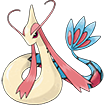 |
Evolution Feebas (Prism Scale) |
| 351 | – |
Castform Normal |
Gift Pokemon Seaport Boathouse (with all Weather TMs and Defog TM) |
|
| 352 | – |
Kecleon Normal |
 |
Route 16 Encounter (Requires Devon Scope) |
| 353 | 107 |
Shuppet Ghost |
 |
Grim Woods Long Grass (Day and Night) |
| 354 | 108 |
Banette Ghost |
Evolution Shuppet (Lv.37) |
|
| 355 | 109 |
Duskull Ghost |
Grim Woods, Rift Cave, Ruins of Void Cave |
|
| 356 | 110 |
Dusclops Ghost |
Rift Cave, Ruins of Void Long Grass (Day and Night) Evolution Duskull (Lv.37) |
|
| 357 | 466 |
Tropius Grass/Flying |
Route 17 Long Grass (Day) |
|
| 358 | – |
Chimecho Psychic |
Rift Cave Cave Evolution Chingling (Max Happiness, Night) |
|
| 359 | – |
Absol Dark |
Crystal Peak Exterior |
|
| 360 | – |
Wynaut Psychic |
 |
Breed Wobbuffet (with Lax Incense) |
| 361 | 001 |
Snorunt Ice |
 |
Route 1, 8 Long Grass (Day and Night) |
| 362 | 002 |
Glalie Ice |
 |
Victory Road Long Grass (Day and Night) Kyurem’s Cave Cave Evolution Snorunt (Lv.42) |
| 363 | 014 |
Spheal Ice/Water |
Icicle Cave Cave Frost Mountain Surf |
|
| 364 | 015 |
Sealeo Ice/Water |
 |
Icicle Cave, Icy Hole, Frost Mountain, Kyurem’s Cave Long Grass (Day and Night) / Surf Evolution Spheal (Lv.32) |
| 365 | 016 |
Walrein Ice/Water |
Evolution Sealeo (Lv.44) |
|
| 366 | 477 |
Clamperl Water |
Route 14, 16, 17, Ruins of Void Underwater |
|
| 367 | 478 |
Huntail Water |
Evolution Clamperl (Deep Sea Tooth) |
|
| 368 | 479 |
Gorebyss Water |
Evolution Clamperl (Deep Sea Scale) |
|
| 369 | 480 |
Relicanth Water/Rock |
Ruins of Void Underwater |
|
| 370 | 292 |
Luvdisc Water |
 |
Route 11, 14, Fallshore City, Epidimy Town, Victory Road Good Rod / Super Rod |
| 371 | 472 |
Bagon Dragon |
Route 17 Long Grass (Day and Night) |
|
| 372 | 473 |
Shelgon Dragon |
 |
Evolution Bagon (Lv.30) |
| 373 | 474 |
Salamence Dragon/Flying |
Evolution Shelgon (Lv.50) |
|
| 374 | – |
Beldum Steel/Psychic |
Starter Acquire at Game Beginning or Shadow Base Post-Game or Rival’s House Post-Game |
|
| 375 | – |
Metang Steel/Psychic |
Evolution Beldum (Lv.20) |
|
| 376 | – |
Metagross Steel/Psychic |
Evolution Metang (Lv.45) |
|
| 377 | 486 |
Regirock Rock |
Great Desert Desert Ruins, after Mission #076: Tomb Raider |
|
| 378 | 487 |
Regice Ice |
Frozen Forest Frozen Cave, after Mission #076: Tomb Raider |
|
| 379 | 488 |
Registeel Steel |
 |
Route 18 Island Cave, after Mission #076: Tomb Raider |
| 380 | – |
Latias Dragon/Psychic |
Mission Reward (Female Trainer) Complete 45 Missions then speak to Mission HQ Ranger; then Roaming Mission Reward (Male Trainer) Complete Mission #042: No Survivors and go to the Pokémon League with Latios in party |
|
| 381 | – |
Latios Dragon/Psychic |
Mission Reward (Male Trainer) Complete 45 Missions then speak to Mission HQ Ranger; then Roaming Mission Reward (Female Trainer) Complete Mission #042: No Survivors and go to the Pokémon League with Latias in party |
|
| 382 | – |
Kyogre Water |
Vivill Warehouse Bring the Blue Orb to the Underwater section |
|
| 383 | – |
Groudon Ground |
Cinder Volcano Shadow Base Bring the Red Orb to the Groudon Chamber |
|
| 384 | – |
Rayquaza Dragon/Flying |
Crystal Peak Bring the Jade Orb to the Summit |
|
| 385 | 490 |
Jirachi Steel/Psychic |
Crater Town Become Champion, then speak to the Old Man in the western House |
|
| 386 | 491 |
Deoxys Water |
Route 5 to Route 13 Path Start in Route 5 and follow the road to Route 13 to find the Deoxys Crater |
|
| 387 | – |
Turtwig Grass |
 |
Gift Pokemon Dehara City, Sinnoh Starter House (first starter free, second starter at 6 Badges, third starter at 8 Badges) |
| 388 | – |
Grotle Grass |
Evolution Turtwig (Lv.18) |
|
| 389 | – |
Torterra Grass/Ground |
Evolution Grotle (Lv.32) |
|
| 390 | – |
Chimchar Fire |
Gift Pokemon Dehara City, Sinnoh Starter House (first starter free, second starter at 6 Badges, third starter at 8 Badges) |
|
| 391 | – |
Monferno Fire/Fighting |
Evolution Chimchar (Lv.14) |
|
| 392 | – |
Infernape Fire/Fighting |
Evolution Monferno (Lv.36) |
|
| 393 | – |
Piplup Water |
Gift Pokemon Dehara City, Sinnoh Starter House (first starter free, second starter at 6 Badges, third starter at 8 Badges) |
|
| 394 | – |
Prinplup Water |
Evolution Piplup (Lv.16) |
|
| 395 | – |
Empoleon Water/Steel |
Evolution Prinplup (Lv.36) |
|
| 396 | 114 |
Starly Normal/Flying |
Route 4 Long Grass (Day and Night) |
|
| 397 | 115 |
Staravia Normal/Flying |
Evolution Starly (Lv.14) |
|
| 398 | 116 |
Staraptor Normal/Flying |
 |
Evolution Staravia (Lv.34) |
| 399 | 060 |
Bidoof Normal |
Route 3 Long Grass (Day and Night) |
|
| 400 | 061 |
Bibarel Normal/Water |
Route 14 Long Grass (Day and Night) Evolution Bidoof (Lv.15) |
|
| 401 | 202 |
Kricketot Bug |
Route 6 Long Grass (Night) |
|
| 402 | 203 |
Kricketune Bug |
Evolution Kricketot (Lv.10) |
|
| 403 | 195 |
Shinx Electric |
Route 6, 7 Long Grass (Day and Night) |
|
| 404 | 196 |
Luxio Electric |
Route 6, 7 Long Grass (Day and Night) Evolution Shinx (Lv.15) |
|
| 405 | 197 |
Luxray Electric |
 |
Evolution Luxio (Lv.30) |
| 406 | 120 |
Budew Grass/Poison |
Route 4 Long Grass (Day and Night) Breeding Roselia (with Rose Incense) |
|
| 407 | 121 |
Roserade Grass/Poison |
Evolution Roselia (Shiny Stone) |
|
| 408 | – |
Cranidos Rock |
Fossil Skull Fossil (Great Desert, Rock Smash, Moleman) |
|
| 409 | – |
Rampardos Rock |
Evolution Cranidos (Lv.30) |
|
| 410 | – |
Shieldon Rock/Steel |
Fossil Armor Fossil (Great Desert, Rock Smash, Moleman) |
|
| 411 | – |
Bastiodon Rock/Steel |
 |
Evolution Shieldon (Lv.30) |
| 412 | 133 |
Burmy Bug (all Cloaks) |
Route 3, 4 Swarm |
|
| 413 | 134 |
Wormadam Bug/Grass (Plant Cloak) Bug/Ground (Sandy Cloak) Bug/Steel (Trash Cloak) |
Evolution Burmy – female only (Lv.20) |
|
| 414 | 135 |
Mothim Bug/Flying |
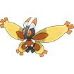 |
Evolution Burmy – male only (Lv.20) |
| 415 | 090 |
Combee Bug/Flying |
Flower Paradise All Flowers (Day and Night) |
|
| 416 | 091 |
Vespiquen Bug/Flying |
 |
Evolution Combee – female only (Lv.21) |
| 417 | – |
Pachirisu Electric |
 |
Trade Tarmigan Town, for Manectric |
| 418 | 062 |
Buizel Water |
Route 3 Long Grass (Day and Night) |
|
| 419 | 063 |
Floatzel Water |
 |
Route 14 Long Grass (Day and Night) Victory Road (Surf) Evolution Buizel (Lv.26) |
| 420 | 072 |
Cherubi Grass |
Route 3 Long Grass (Day) |
|
| 421 | 073 |
Cherrim Grass |
Evolution Cherubi (Lv.25) |
|
| 422 | 064 |
Shellos Water |
Route 3 Long Grass (Day and Night) (West Sea Shellos) Breeding East Sea Gastrodon (East Sea Shellos) |
|
| 423 | 065 |
Gastrodon Water |
Route 14 Long Grass (Day and Night) (West Sea Gastrodon) Polder Town, Cootes Bog, Crystal Peak Surf (East Sea Gastrodon) Evolution Shellos (Lv.30) (West and East Sea) |
|
| 424 | – |
Ambipom Normal |
 |
Evolution Aipom (leveled knowing Double Hit) |
| 425 | – |
Drifloon Ghost/Flying |
Breeding Drifblim |
|
| 426 | – |
Drifblim Ghost/Flying |
Crystal Peak Exterior Evolution Drifloon (Lv.28) |
|
| 427 | 209 |
Buneary Normal |
Route 7 Long Grass (Day and Night) |
|
| 428 | 210 |
Lopunny Normal |
Evolution Buneary (Max Happiness) |
|
| 429 | 324 |
Mismagius Ghost |
Evolution Misdreavus (Dusk Stone) |
|
| 430 | 155 |
Honchkrow Dark/Flying |
 |
Evolution Murkrow (Dusk Stone) |
| 431 | 275 |
Glameow Normal |
 |
Gift Pokemon Bellin Town, Gentleman (⅓ chance) Route 11 Swarm |
| 432 | 276 |
Purugly Normal |
Evolution Glameow (Lv.34) |
|
| 433 | 375 |
Chingling Psychic |
 |
Breeding Chimecho (with Pure Incense) |
| 434 | 376 |
Stunky Poison/Dark |
Gift Pokemon Bellin Town, Gentleman (⅓ chance) Breeding Skuntank |
|
| 435 | – |
Skuntank Poison/Dark |
Route 18 Long Grass (Night) Evolution Stunky (Lv.34) |
|
| 436 | 225 |
Bronzor Steel/Psychic |
Frost Mountain, Rift Cave Cave |
|
| 437 | 226 |
Bronzong Steel/Psychic |
Ruins of Void, Rift Cave Cave Evolution Evolve Bronzor (Lv.33) |
|
| 438 | – |
Bonsly Rock |
Breeding Sudowoodo (with Rock Incense) |
|
| 439 | 221 |
Mime Jr. Psychic/Fairy |
Breeding Mr. Mime (with Odd Incense) |
|
| 440 | – |
Happiny Normal |
Route 9 Long Grass (Day and Night) Breeding Chansey (with Luck Incense) |
|
| 441 | 456 |
Chatot Normal/Flying |
 |
Route 16 Long Grass (Day and Night) |
| 442 | – |
Spiritomb Ghost/Dark |
Gift Pokemon Gurun Town Pokemon Centre, Old Lady (must have Odd Keystone) |
|
| 443 | – |
Gible Dragon/Ground |
Starter Acquire at Game Beginning or Shadow Base Post-Game or Rival’s House Post-Game |
|
| 444 | – |
Gabite Dragon/Ground |
Evolution Gible (Lv.24) |
|
| 445 | – |
Garchomp Dragon/Ground |
Evolution Gabite (Lv.48) |
|
| 446 | – |
Munchlax Normal |
Breeding Snorlax (with Full Incense) |
|
| 447 | 052 |
Riolu Fighting |
Route 2 Long Grass (Day and Night) |
|
| 448 | 053 |
Lucario Fighting/Steel |
Evolution Riolu (Max Happiness, Day) |
|
| 449 | 422 |
Hippopotas Ground |
Breeding Hippowdon Magnolia Cafe Egg Lady, randomly obtained |
|
| 450 | 423 |
Hippowdon Ground |
 |
Great Desert Sands (Day and Night) Evolution Hippopotas (Lv.34) |
| 451 | 246 |
Skorupi Poison/Bug |
 |
Gift Pokemon Bellin Town, Gentleman (⅓ chance) Route 9 Long Grass (Day and Night) |
| 452 | 247 |
Drapion Poison/Dark |
 |
Cootes Bog Long Grass (Day and Night) Evolution Skorupi (Lv.40) |
| 453 | – |
Croagunk Poison/Fighting |
 |
Cootes Bog Long Grass (Day and Night) |
| 454 | – |
Toxicroak Poison/Fighting |
Cootes Bog Long Grass (Day and Night) Evolution Croagunk (Lv.37) |
|
| 455 | – |
Carnivine Grass |
 |
Cootes Bog Long Grass (Day and Night) |
| 456 | 395 |
Finneon Water |
 |
Valley Cave, Crystal Peak, Victory Road, Epidimy Town Good Rod |
| 457 | 396 |
Lumineon Water |
Epidimy Town Surf Valley Cave, Crystal Peak, Victory Road Super Rod Evolution Finneon (Lv.31) |
|
| 458 | 392 |
Mantyke Water/Flying |
Route 6, 7, 12, 16, 17, Antisis City, Seaport City Surf Breeding Mantine (with Wave Incense) |
|
| 459 | 232 |
Snover Grass/Ice |
Route 8, Frozen Forest Long Grass (Day and Night) |
|
| 460 | 233 |
Abomasnow Grass/Ice |
 |
Victory Road Long Grass (Day and Night) Evolution Snover (Lv.40) |
| 461 | 230 |
Weavile Dark/Ice |
 |
Evolution Sneasel (leveled holding Razor Claw, Night) |
| 462 | 297 |
Magnezone Electric/Steel |
 |
Evolution Magneton (Thunder Stone or leveled in Thundercap Mountain) |
| 463 | 157 |
Lickilicky Normal |
Evolution Lickitung (leveled knowing Rollout) |
|
| 464 | – |
Rhyperior Ground/Rock |
 |
Evolution Rhydon (Protector) |
| 465 | 450 |
Tangrowth Grass |
 |
Evolution Tangela (leveled knowing Ancient Power) |
| 466 | 305 |
Electivire Electric |
Evolution Electabuzz (Electirizer) |
|
| 467 | 148 |
Magmortar Fire |
 |
Evolution Magmar (Magmarizer) |
| 468 | – |
Togekiss Fairy/Flying |
 |
Evolution Togetic (Shiny Stone) |
| 469 | 169 |
Yanmega Bug/Flying |
 |
Evolution Yanma (leveled knowing Ancient Power) |
| 470 | 361 |
Leafeon Grass |
 |
Evolution Eevee (Leaf Stone) |
| 471 | 362 |
Glaceon Ice |
Evolution Eevee (Ice Stone) |
|
| 472 | 187 |
Gliscor Ground/Flying |
Evolution Gligar (leveled holding Razor Fang, Night) |
|
| 473 | 024 |
Mamoswine Ice/Ground |
Evolution Piloswine (leveled knowing Ancient Power) |
|
| 474 | 369 |
Porygon-Z Normal |
Evolution Porygon2 (Dubious Disc) |
|
| 475 | 132 |
Gallade Psychic/Fighting |
Evolution Kirlia, male only (Dawn Stone) |
|
| 476 | 180 |
Probopass Rock/Steel |
Evolution Nosepass (Thunder Stone or leveled in Thundercap Mountain) |
|
| 477 | 111 |
Dusknoir Ghost |
Evolution Dusclops (Reaper Cloth) |
|
| 478 | 003 |
Froslass Ice/Ghost |
 |
Evolution Snorunt, female only (Dawn Stone) |
| 479 | – |
Rotom Electric/Ghost |
Mission Reward Mission #077: Too Much TV |
|
| 480 | – |
Uxie Psychic |
Tarmigan Town Dream Research Lab Exterior, during Mission #027: Guardians of the Lake |
|
| 481 | – |
Mesprit Psychic |
Shadow Base Zeph’s Office, during Mission #027: Guardians of the Lake |
|
| 482 | – |
Azelf Psychic |
Route 18 North of Route 18 Pokemon Center, during Mission #027: Guardians of the Lake |
|
| 483 | – |
Dialga Steel/Dragon |
Cave of Being with Uxie, Mesprit, Azelf in party during Mission #027: Guardians of the Lake |
|
| 484 | – |
Palkia Water/Dragon |
Rift Cave During Mission #004: A Rift in Space |
|
| 485 | 492 |
Heatran Fire/Steel |
Cinder Volcano Bring the Lava Orb to the 1F Lava Pool |
|
| 486 | 489 |
Regigigas Normal |
Icy Hole with Regice, Registeel, Regirock in party |
|
| 487 | – |
Giratina Ghost/Dragon |
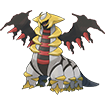 |
Distortion World Encounter |
| 488 | – |
Cresselia Psychic |
Fullmoon Island During Mission #066: The Endless Nightmare |
|
| 489 | – |
Phione Water |
Breeding Manaphy |
|
| 490 | – |
Manaphy Water |
Ruins of Void Underwater Egg, after solving the Tablet as part of Mission #007: Am I Blind? |
|
| 491 | – |
Darkrai Dark |
 |
Newmoon Island Complete Mission #066: The Endless Nightmare |
| 492 | 493 |
Shaymin Grass (Land Forme) Grass/Flying (Sky Forme) |
Flower Paradise Encounter |
|
| 493 | – |
Arceus Normal |
Dream Research Lab All Plates Acquired |
|
| 494 | – |
Victini Psychic/Fire |
Mission Reward Mission #025: Gimme a V |
|
| 495 | – |
Snivy Grass |
Gift Pokémon Route 5, Unovan Starter House (first starter free, second starter at 4 Badges, third starter at 7 Badges) |
|
| 496 | – |
Servine Grass |
Evolution Snivy (Lv.17) |
|
| 497 | – |
Serperior Grass |
Evolution Servine (Lv.36) |
|
| 498 | – |
Tepig Fire |
Gift Pokémon Route 5, Unovan Starter House (first starter free, second starter at 4 Badges, third starter at 7 Badges) |
|
| 499 | – |
Pignite Fire/Fighting |
Evolution Tepig (Lv.17) |
|
| 500 | – |
Emboar Fire/Fighting |
Evolution Pignite (Lv.36) |
|
| 501 | – |
Oshawott Water |
 |
Gift Pokémon Route 5, Unovan Starter House (first starter free, second starter at 4 Badges, third starter at 7 Badges) |
| 502 | – |
Dewott Water |
Evolution Oshawott (Lv.17) |
|
| 503 | – |
Samurott Water |
Evolution Dewott (Lv.36) |
|
|
Hisuian Samurott Water/Dark |
Evolution Dewott (Lv.36, holding Hisui Rock) |
|||
| 504 | 037 |
Patrat Normal |
Route 2 Long Grass (Day) |
|
| 505 | 038 |
Watchog Normal |
Evolution Patrat (Lv.20) |
|
| 506 | 117 |
Lillipup Normal |
Route 4 Long Grass (Day and Night) |
|
| 507 | 118 |
Herdier Normal |
 |
Evolution Lillipup (Lv.16) |
| 508 | 119 |
Stoutland Normal |
 |
Evolution Herdier (Lv.32) |
| 509 | 172 |
Purrloin Dark |
Route 5 Long Grass (Day and Night) |
|
| 510 | 173 |
Liepard Dark |
Evolution Purrloin (Lv.20) |
|
| 511 | 084 |
Pansage Grass |
Flower Paradise Pink Flowers (Day and Night) |
|
| 512 | 085 |
Simisage Grass |
 |
Evolution Pansage (Leaf Stone) |
| 513 | 086 |
Pansear Fire |
Route 9 Red Flowers (Day and Night) |
|
| 514 | 087 |
Simisear Fire |
Evolution Pansear (Fire Stone) |
|
| 515 | 088 |
Panpour Water |
Route 9 Blue Flowers (Day and Night) |
|
| 516 | 089 |
Simipour Water |
Evolution Panpour (Water Stone) |
|
| 517 | – |
Munna Psychic |
Tarmigan Town Raid Den Breeding Musharna |
|
| 518 | – |
Musharna Psychic |
Tarmigan Town Raid Den Evolution Munna (Moon Stone) |
|
| 519 | – |
Pidove Normal/Flying |
Breeding Tranquill Magnolia Cafe Egg Lady, randomly obtained |
|
| 520 | – |
Tranquill Normal/Flying |
Magnolia Fields Long Grass (Day and Night) Evolution Pidove (Lv.21) |
|
| 521 | – |
Unfezant Normal/Flying |
 |
Evolution Tranquill (Lv.32) |
| 522 | – |
Blitzle Electric |
 |
Safari Zone Easy |
| 523 | – |
Zebstrika Electric |
Safari Zone Medium, Hard Evolution Blitzle (Lv.27) |
|
| 524 | 019 |
Roggenrola Rock |
Icicle Cave, Frost Mountain Cave Route 2, 8 Rock Smash |
|
| 525 | 020 |
Boldore Rock |
 |
Icicle Cave, Icy Hole, Victory Road Cave Evolution Roggenrola (Lv.45) |
| 526 | 021 |
Gigalith Rock |
Evolution Boldore (Link Stone) |
|
| 527 | 136 |
Woobat Psychic/Flying |
 |
Cinder Volcano, Valley Cave, KBT Expressway, Frost Mountain, Lost Tunnel, Crystal Peak, Victory Road Cave |
| 528 | 137 |
Swoobat Psychic/Flying |
 |
Evolution Woobat (Max Happiness) |
| 529 | 027 |
Drilbur Ground |
Icicle Cave, Cinder Volcano Cave |
|
| 530 | 028 |
Excadrill Ground/Steel |
Cinder Volcano Shadow Base, Victory Road Cave Evolution Drilbur (Lv.31) |
|
| 531 | 248 |
Audino Normal |
 |
Route 18, Victory Road Long Grass (Day and Night) |
| 532 | 309 |
Timburr Fighting |
 |
Thundercap Mountain Cave |
| 533 | 310 |
Gurdurr Fighting |
 |
Thundercap Mountain Cave Evolution Timburr (Lv.25) |
| 534 | 311 |
Conkeldurr Fighting |
 |
Evolution Gurdurr (Link Stone) |
| 535 | 254 |
Tympole Water |
Route 10, Auburn Waterway Long Grass (Day and Night) |
|
| 536 | 255 |
Palpitoad Water/Ground |
Route 10, Auburn Waterway Long Grass (Day and Night) / Surf Polder Town Surf Evolution Tympole (Lv.45) |
|
| 537 | 256 |
Seismitoad Water/Ground |
 |
Evolution Palpitoad (Lv.36) |
| 538 | 457 |
Throh Fighting |
 |
Route 16 Long Grass (Day and Night) |
| 539 | 458 |
Sawk Fighting |
Route 16 Long Grass (Day and Night) |
|
| 540 | – |
Sewaddle Bug/Grass |
Breeding Swadloon Magnolia Cafe Egg Lady, randomly obtained |
|
| 541 | – |
Swadloon Bug/Grass |
Vivill Woods Long Grass (Day and Night) Evolution Sewaddle (Lv.20) |
|
| 542 | – |
Leavanny Bug/Grass |
Evolution Swadloon (Max Happiness) |
|
| 543 | – |
Venipede Bug/Poison |
Breeding Whirlipede |
|
| 544 | – |
Whirlipede Bug/Poison |
Antisis Sewers Swarm Evolution Venipede (Lv.22) |
|
| 545 | – |
Scolipede Bug/Poison |
Evolution Whirlipede (Lv.30) |
|
| 546 | 436 |
Cottonee Grass/Fairy |
 |
Vivill Woods Long Grass (Day and Night) |
| 547 | 437 |
Whimsicott Grass/Fairy |
 |
Evolution Cottonee (Sun Stone) |
| 548 | 438 |
Petilil Grass |
Vivill Woods Long Grass (Day and Night) |
|
| 549 | 439 |
Lilligant Grass |
 |
Evolution Petilil (Sun Stone) |
|
Hisuian Lilligant Grass/Fighting |
Evolution Petilil (Sun Stone, holding Hisui Rock) |
|||
| 550 | 391 |
Basculin Water |
 |
Route 2, 4, 5, 11, 15, Dresco Town Surf (Red-Striped Basculin) Victory Road Surf (Blue-Striped Basculin) |
|
Hisuian Basculin Water |
Unbound Cloud Trade |
|||
| 551 | 415 |
Sandile Ground/Dark |
Breeding Krokorok Magnolia Cafe Egg Lady, randomly obtained |
|
| 552 | 416 |
Krokorok Ground/Dark |
Great Desert Sands (Day and Night) Evolution Sandile (Lv.29) |
|
| 553 | 417 |
Krookodile Ground/Dark |
Evolution Krokorok (Lv.40) |
|
| 554 | 420 |
Darumaka Fire |
Great Desert Sands (Day and Night) |
|
|
Galarian Darumaka Ice |
Breeding Galarian Darmanitan Unbound Cloud Trade |
|||
| 555 | 421 |
Darmanitan Fire (Standard Mode) Fire/Psychic (Zen Mode) |
 |
Evolution Darumaka (Lv.35) |
|
Galarian Darmanitan Ice (Standard Mode) Ice/Psychic (Zen Mode) |
Requires Gen 8 Activation Victory Road Encounter Evolution Galarian Darumaka (Lv.35) |
|||
| 556 | 427 |
Maractus Grass |
 |
Great Desert Sands (Day and Night) |
| 557 | 413 |
Dwebble Bug/Rock |
Great Desert Sands (Day and Night) |
|
| 558 | 414 |
Crustle Bug/Rock |
Evolution Dwebble (Lv.34) |
|
| 559 | 050 |
Scraggy Dark/Fighting |
Route 2 Long Grass (Day and Night) |
|
| 560 | 051 |
Scrafty Dark/Fighting |
Evolution Scraggy (Lv.39) |
|
| 561 | 387 |
Sigilyph Psychic/Flying |
Ruins of Void, Tomb of Borrius Interior |
|
| 562 | 382 |
Yamask Ghost |
Ruins of Void Interior |
|
|
Galarian Yamask Ground/Ghost |
Requires Gen 8 Activation Ruins of Void Encounter |
|||
| 563 | 383 |
Cofagrigus Ghost |
Ruins of Void Interior Evolution Yamask (Lv.34) |
|
| 564 | – |
Tirtouga Water/Rock |
 |
Fossil Cover Fossil (Great Desert, Rock Smash, Moleman) |
| 565 | – |
Carracosta Water/Rock |
Evolution Tirtouga (Lv.37) |
|
| 566 | – |
Archen Rock/Flying |
Fossil Plume Fossil (Great Desert, Rock Smash, Moleman) |
|
| 567 | – |
Archeops Rock/Flying |
Evolution Archen (Lv.37) |
|
| 568 | – |
Trubbish Poison |
Antisis City Dumpsters |
|
| 569 | – |
Garbodor Poison |
Antisis City Dumpsters Mission Reward Mission #074: The Trash-Man (Gigantamax) Evolution Trubbish (Lv.36) |
|
| 570 | – |
Zorua Dark |
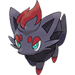 |
Breeding Zoroark |
|
Hisuian Zorua Normal/Ghost |
Breeding Hisuian Zoroark |
|||
| 571 | – |
Zoroark Dark |
Redwood Forest Encounter |
|
|
Hisuian Zoroark Normal/Ghost |
 |
Post-Game Mystery Gift Code 6QW3ZY6EA1SQ Evolution Hisuian Zorua (Lv.30) |
||
| 572 | 041 |
Minccino Normal |
Route 2 Long Grass (Day and Night) |
|
| 573 | 042 |
Cinccino Normal |
Evolution Minccino (Shiny Stone) |
|
| 574 | 343 |
Gothita Psychic |
Route 12 Long Grass (Night) |
|
| 575 | 344 |
Gothorita Psychic |
Evolution Gothita (Lv.32) |
|
| 576 | 345 |
Gothitelle Psychic |
Evolution Gothorita (Lv.45) |
|
| 577 | 346 |
Solosis Psychic |
Route 12 Long Grass (Day) |
|
| 578 | 347 |
Duosion Psychic |
Evolution Solosis (Lv.32) |
|
| 579 | 348 |
Reuniclus Psychic |
Evolution Duosion (Lv.41) |
|
| 580 | – |
Ducklett Water/Flying |
Trade Dresco Town, for Alolan Sandshrew |
|
| 581 | – |
Swanna Water/Flying |
Evolution Ducklett (Lv.30) |
|
| 582 | 004 |
Vanillite Ice |
 |
Route 1 Long Grass (Day and Night) |
| 583 | 005 |
Vanillish Ice |
 |
Victory Road Long Grass (Day and Night) Evolution Vanillite (Lv.24) |
| 584 | 006 |
Vanilluxe Ice |
 |
Evolution Vanillish (Lv.42) |
| 585 | 198 |
Deerling Normal/Grass (Spring Form) Normal/Grass (Summer Form) Normal/Grass (Autumn Form) Normal/Grass (Winter Form) |
|
Route 6 Long Grass (Day and Night) (Spring Form) Route 12 Long Grass (Day and Night) (Summer Form) Route 9 Long Grass (Day and Night) (Autumn Form) Route 8 Long Grass (Day and Night) (Winter Form) |
| 586 | 199 |
Sawsbuck Normal/Grass (Spring Form) Normal/Grass (Summer Form) Normal/Grass (Autumn Form) Normal/Grass (Winter Form) |
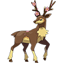 |
Evolution Deerling (Lv.34) (Form into Form) |
| 587 | 370 |
Emolga Electric/Flying |
 |
Dehara City Game Corner 500 Coins |
| 588 | 249 |
Karrablast Bug |
Route 9 Swarm |
|
| 589 | 250 |
Escavalier Bug/Steel |
Evolution Karrablast (Link Stone) |
|
| 590 | 442 |
Foongus Grass/Poison |
Vivill Woods Encounter (½ chance of it or a Morelull) |
|
| 591 | 443 |
Amoonguss Grass/Poison |
 |
Trade Vivill Town, for Shiinotic Evolution Foongus (Lv.39) |
| 592 | – |
Frillish Water/Ghost |
Magnolia Fields Surf |
|
| 593 | – |
Jellicent Water/Ghost |
Magnolia Fields Surf Evolution Jellicent (Lv.40) |
|
| 594 | 398 |
Alomomola Water |
Route 13 Surf |
|
| 595 | 312 |
Joltik Bug/Electric |
 |
Thundercap Mountain Swarm |
| 596 | 313 |
Galvantula Bug/Electric |
Evolution Joltik (Lv.36) |
|
| 597 | 314 |
Ferroseed Grass/Steel |
Thundercap Mountain Swarm |
|
| 598 | 315 |
Ferrothorn Grass/Steel |
 |
Evolution Ferroseed (Lv.40) |
| 599 | 300 |
Klink Steel |
Thundercap Mountain Cave |
|
| 600 | 301 |
Klang Steel |
 |
Thundercap Mountain Cave Evolution Klink (Lv.35) |
| 601 | 302 |
Klinklang Steel |
 |
Evolution Klang (Lv.45) |
| 602 | 306 |
Tynamo Electric |
 |
Thundercap Mountain Cave |
| 603 | 307 |
Eelektrik Electric |
 |
Thundercap Mountain Cave Evolution Tynamo (Lv.39) |
| 604 | 308 |
Eelektross Electric |
Evolution Eelektrik (Thunder Stone) |
|
| 605 | 174 |
Elgyem Psychic |
Route 5 Swarm |
|
| 606 | 175 |
Beheeyem Psychic |
Evolution Elgyem (Lv.42) |
|
| 607 | – |
Litwick Ghost/Fire |
Breeding Lampent |
|
| 608 | – |
Lampent Ghost/Fire |
Trade Redwood Village, for Zweilous Evolution Litwick (Lv.41) |
|
| 609 | – |
Chandelure Ghost/Fire |
Evolution Lampent (Dusk Stone) |
|
| 610 | 364 |
Axew Dragon |
 |
Dehara City Game Corner 5000 Coins |
| 611 | 365 |
Fraxure Dragon |
Crystal Peak Cave Evolution Axew (Lv.38) |
|
| 612 | 366 |
Haxorus Dragon |
Evolution Fraxure (Lv.48) |
|
| 613 | 234 |
Cubchoo Ice |
Route 8, Frozen Forest Long Grass (Day and Night) |
|
| 614 | 235 |
Beartic Ice |
 |
Victory Road Long Grass (Day and Night) Evolution Cubchoo (Lv.37) |
| 615 | 231 |
Cryogonal Ice |
Frost Mountain Cave |
|
| 616 | 262 |
Shelmet Bug |
Route 10 Swarm |
|
| 617 | 263 |
Accelgor Bug |
Evolution Shelmet (Link Stone) |
|
| 618 | 397 |
Stunfisk Ground/Electric |
Thundercap Mountain, Polder Town, Cootes Bog Surf |
|
|
Galarian Stunfisk Ground/Steel |
 |
Requires Gen 8 Activation Cootes Bog Surf |
||
| 619 | 340 |
Mienfoo Fighting |
Route 12 Long Grass (Day and Night) |
|
| 620 | 341 |
Mienshao Fighting |
Evolution Mienfoo (Lv.46) |
|
| 621 | – |
Druddigon Dragon |
Victory Road Cave |
|
| 622 | 373 |
Golett Ground/Ghost |
Rift Cave Cave |
|
| 623 | 374 |
Golurk Ground/Ghost |
Rift Cave Cave Evolution Golett (Lv.43) |
|
| 624 | 454 |
Pawniard Dark/Steel |
Route 16 Long Grass (Day and Night) |
|
| 625 | 455 |
Bisharp Dark/Steel |
Evolution Pawniard (Lv.52) |
|
| 626 | – |
Bouffalant Normal |
Route 18 Long Grass (Day and Night) |
|
| 627 | – |
Rufflet Normal/Flying |
 |
Great Desert Sands (Day and Night, only Monday) Crystal Peak Exterior |
| 628 | – |
Braviary Normal/Flying |
Evolution Rufflet (Lv.50) |
|
|
Hisuian Braviary Psychic/Flying |
Evolution Rufflet, holding Hisui Rock (Lv.50) |
|||
| 629 | – |
Vullaby Dark/Flying |
Great Desert Sands (Day and Night, only Monday) Crystal Peak Exterior |
|
| 630 | – |
Mandibuzz Dark/Flying |
 |
Evolution Vullaby (Lv.54) |
| 631 | 149 |
Heatmor Fire |
 |
Cinder Volcano Shadow Base, Victory Road Cave |
| 632 | – |
Durant Bug/Steel |
 |
Victory Road Cave |
| 633 | – |
Deino Dark/Dragon |
Crystal Peak Cave |
|
| 634 | – |
Zweilous Dark/Dragon |
Crystal Peak Cave Evolution Deino (Lv.50) |
|
| 635 | – |
Hydreigon Dark/Dragon |
Evolution Zweilous (Lv.64) |
|
| 636 | – |
Larvesta Bug/Fire |
Mission Reward Mission #079: Treasure Hunter |
|
| 637 | – |
Volcarona Bug/Fire |
Evolution Larvesta (Lv.59) |
|
| 638 | – |
Cobalion Steel/Fighting |
 |
Victory Road Snowy Area, during Mission #059: Swords of Justice |
| 639 | – |
Terrakion Rock/Fighting |
Victory Road 3F Cave, during Mission #059: Swords of Justice |
|
| 640 | – |
Virizion Grass/Fighting |
Victory Road Maze Area, during Mission #059: Swords of Justice |
|
| 641 | – |
Tornadus Flying |
Magnolia Fields Post-Game, Roaming |
|
| 642 | – |
Thundurus Electric/Flying |
Magnolia Fields Post-Game, Roaming |
|
| 643 | – |
Reshiram Dragon/Fire |
Post-Game Portal Crystal Peak 3F, Day |
|
| 644 | – |
Zekrom Dragon/Electric |
Post-Game Portal Crystal Peak 3F, Day |
|
| 645 | – |
Landorus Ground/Flying |
Magnolia Fields with Tornadus and Thundurus in party |
|
| 646 | – |
Kyurem Dragon/Ice |
Kyurem’s Cave Cave |
|
| 647 | 494 |
Keldeo Water/Fighting |
Cave of Being with Cobalion, Terrakion, Virizion in party |
|
| 648 | – |
Meloetta Normal/Psychic (Aria Forme) Normal/Fighting (Pirouette Forme) |
Polder Town Post-Game Encounter, Night |
|
| 649 | – |
Genesect Bug/Steel |
Post-Game Mystery Gift Cove 7HY9JN6EE5YY |
|
| 650 | – |
Chespin Grass |
Magnolia Cafe Egg Lady, randomly obtained |
|
| 651 | – |
Quilladin Grass |
Evolution Chespin (Lv.16) |
|
| 652 | – |
Chesnaught Grass/Fighting |
Evolution Quilladin (Lv.36) |
|
| 653 | – |
Fennekin Fire |
Magnolia Cafe Egg Lady, randomly obtained |
|
| 654 | – |
Braixen Fire |
Evolution Fennekin (Lv.16) |
|
| 655 | – |
Delphox Fire/Psychic |
 |
Evolution Braixen (Lv.36) |
| 656 | – |
Froakie Water |
Magnolia Cafe Egg Lady, randomly obtained |
|
| 657 | – |
Frogadier Water |
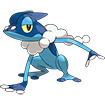 |
Evolution Froakie (Lv.16) |
| 658 | – |
Greninja Water/Dark |
Evolution Frogadier (Lv.36) |
|
| 659 | 189 |
Bunnelby Normal |
Route 6 Long Grass (Day and Night) |
|
| 660 | 190 |
Diggersby Normal/Ground |
Evolution Bunnelby (Lv.20) |
|
| 661 | 331 |
Fletchling Normal/Ground |
 |
Route 12 Long Grass (Day) |
| 662 | 332 |
Fletchinder Fire/Flying |
Route 9 Long Grass (Day and Night) Evolution Fletchling (Lv.17) |
|
| 663 | 333 |
Talonflame Fire/Flying |
 |
Evolution Fletchinder (Lv.35) |
| 664 | 433 |
Scatterbug Bug |
Vivill Woods Long Grass (Day and Night) |
|
| 665 | 434 |
Spewpa Bug |
Vivill Woods Long Grass (Day and Night) Evolution Scatterbug (Lv.9) |
|
| 666 | 435 |
Vivillon Bug/Flying |
Evolution Spewpa (Lv.12) |
|
| 667 | – |
Litleo Fire/Normal |
Reward Pokemon Route 2, Defeat All Trainers |
|
| 668 | – |
Pyroar Fire/Normal |
 |
Evolution Litleo (Lv.35) |
| 669 | 078 |
Flabebe Fairy (All Colors) |
Flower Paradise All Flowers (Day and Night) |
|
| 670 | 079 |
Floette Fairy (All Colors) |
Evolution Flabebe (Lv.19) |
|
|
AZ’ Floette Fairy |
Post-Game Portal Vivill Warehouse B5F |
|||
| 671 | 080 |
Florges Fairy (All Colors) |
Evolution Floette (Shiny Stone) |
|
| 672 | – |
Skiddo Grass |
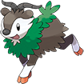 |
Breeding Gogoat |
| 673 | – |
Gogoat Grass |
Magnolia Fields Long Grass (Day and Night) Evolution Skiddo (Lv.32) |
|
| 674 | 452 |
Pancham Fighting |
Route 16 Long Grass (Day and Night) |
|
| 675 | 453 |
Pangoro Fighting/Dark |
 |
Evolution Pangoro (Lv.32, with a Dark-type in your party) |
| 676 | – |
Furfrou Normal |
Magnolia Fields Long Grass (Day and Night) |
|
| 677 | 217 |
Espurr Psychic |
Route 7 Long Grass (Day) |
|
| 678 | 218 |
Meowstic Psychic |
Evolution Espurr (Lv.25) |
|
| 679 | – |
Honedge Steel/Ghost |
Breeding Doublade or Aegislash |
|
| 680 | – |
Doublade Steel/Ghost |
Safari Zone Insane Evolution Honedge (Lv.35) |
|
| 681 | – |
Aegislash Steel/Ghost |
Evolution Doublade (Dusk Stone) |
|
| 682 | 351 |
Spritzee Fairy |
Route 12 Swarm |
|
| 683 | 352 |
Aromatisse Fairy |
Evolution Spritzee (Sachet) |
|
| 684 | 349 |
Swirlix Fairy |
Route 12 Swarm |
|
| 685 | 350 |
Slurpuff Fairy |
Evolution Swirlix (Whipped Dream) |
|
| 686 | 054 |
Inkay Dark/Psychic |
 |
Route 2 Long Grass (Day and Night) |
| 687 | 055 |
Malamar Dark/Psychic |
 |
Evolution Inkay (Lv.30) |
| 688 | – |
Binacle Rock/Water |
Route 2 Encounter Route 2, 13, 14, 16, 17, 18, Great Desert Rock Smash |
|
| 689 | – |
Barbaracle Rock/Water |
Evolution Binacle (Lv.36) |
|
| 690 | 399 |
Skrelp Poison/Water |
Route 13 Good Rod |
|
| 691 | 400 |
Dragalge Poison/Dragon |
Route 13 Super Rod Evolution Skrelp (Lv.48) |
|
| 692 | 401 |
Clauncher Water |
Route 13 Good Rod |
|
| 693 | 402 |
Clawitzer Water |
Route 13 Super Rod Evolution Clauncher (Lv.37) |
|
| 694 | – |
Helioptile Electric/Normal |
Safari Zone Easy, Medium, Hard |
|
| 695 | – |
Heliolisk Electric/Normal |
Safari Zone Insane Evolution Helioptile (Sun Stone) |
|
| 696 | – |
Tyrunt Rock/Dragon |
Fossil Jaw Fossil (Great Desert, Rock Smash, Moleman) |
|
| 697 | – |
Tyrantrum Rock/Dragon |
 |
Evolution Tyrunt (Lv.39, Day) |
| 698 | – |
Amaura Rock/Ice |
Fossil Sail Fossil (Great Desert, Rock Smash, Moleman) |
|
| 699 | – |
Aurorus Rock/Ice |
Evolution Amaura (Lv.39, Night) |
|
| 700 | 363 |
Sylveon Fairy |
Evolution Eevee (leveled while knowing a Fairy-type move) |
|
| 701 | 371 |
Hawlucha Fighting/Flying |
 |
Dehara City Game Corner 1000 Coins |
| 702 | 342 |
Dedenne Electric/Fairy |
 |
Route 12 Long Grass (Day and Night) |
| 703 | 183 |
Carbink Rock/Fairy |
KBT Expressway Use Light Clay with the ADM on Collapsed Tunnels |
|
| 704 | 259 |
Goomy Dragon |
Route 10, Auburn Waterway Long Grass (Day and Night) |
|
| 705 | 260 |
Sliggoo Dragon |
Cootes Bog Long Grass (Day and Night) Polder Town Surf Evolution Goomy (Lv.40) |
|
|
Hisuian Sliggoo Dragon |
Evolution Goomy (Lv.40, holding Hisui Rock) |
|||
| 706 | 261 |
Goodra Dragon |
Evolution Sliggoo (Lv.50, Rain or Fog) |
|
|
Hisuian Goodra Dragon |
Evolution Hisuian Sliggoo (Lv.50, Rain or Fog) |
|||
| 707 | 372 |
Klefki Steel/Fairy |
Dehara City Game Corner 3000 Coins |
|
| 708 | 112 |
Phantump Ghost/Grass |
Grim Woods Long Grass (Day and Night) |
|
| 709 | 113 |
Trevenant Ghost/Grass |
 |
Evolution Phantump (Link Stone) |
| 710 | 102 |
Pumpkaboo Ghost/Grass |
Grim Woods Long Grass (Day and Night) |
|
| 711 | 103 |
Gourgeist Water |
 |
Evolution Pumpkaboo (Link Stone) |
| 712 | 025 |
Bergmite Ice |
Icicle Cave Cave |
|
| 713 | 026 |
Avalugg Ice |
 |
Icicle Cave, Icy Hole, Victory Road Cave Evolution Bergmite (Lv.37) |
|
Hisuian Avalugg Ice/Rock |
Evolution Bergmite (Lv.37, holding Hisui Rock) |
|||
| 714 | 181 |
Noibat Flying/Dragon |
Valley Cave, KBT Expressway, Crystal Peak Cave |
|
| 715 | 182 |
Noivern Flying/Dragon |
Crystal Peak Cave Evolution Noibat (Lv.48) |
|
| 716 | – |
Xerneas Fairy |
 |
Post-Game Portal Redwood Forest, Day |
| 717 | – |
Yveltal Dark/Flying |
Post-Game Portal Crystal Peak, Night |
|
| 718 | – |
Zygarde Dragon/Ground (All Formes) |
 |
Mission Reward Mission #070: The Powerhouse of the Cell |
| 719 | 495 |
Diancie Rock/Fairy |
KBT Expressway Use Light Clay with the ADM on Collapsed Tunnels – after Mission #038: Major Miner |
|
| 720 | 498 |
Hoopa Confined Psychic/Ghost |
Crystal Peak Encounter (Main Story) |
|
|
Hoopa Unbound Psychic/Dark |
Forme Change Prison Bottle |
|||
| 721 | – |
Volcanion Fire/Water |
Cinder Volcano Post-Game, after beating Elite Four again |
|
| 722 | – |
Rowlet Grass/Flying |
Gift Pokemon Seaport City, Alolan Starter House (first starter free, second starter at 7 Badges, third starter at 8 Badges) |
|
| 723 | – |
Dartrix Grass/Flying |
Evolution Rowlet (Lv.17) |
|
| 724 | – |
Decidueye Grass/Ghost |
Evolution Dartrix (Lv.34) |
|
|
Hisuian Decidueye Grass/Fighting |
Evolution Dartrix (Lv.34, holding Hisui Rock) |
|||
| 725 | – |
Litten Fire |
Gift Pokemon Seaport City, Alolan Starter House (first starter free, second starter at 7 Badges, third starter at 8 Badges) |
|
| 726 | – |
Torracat Fire |
Evolution Litten (Lv.17) |
|
| 727 | – |
Incineroar Fire/Dark |
Evolution Torracat (Lv.34) |
|
| 728 | – |
Popplio Water |
Gift Pokemon Seaport City, Alolan Starter House (first starter free, second starter at 7 Badges, third starter at 8 Badges) |
|
| 729 | – |
Brionne Water |
Evolution Popplio (Lv.17) |
|
| 730 | – |
Primarina Water/Fairy |
Evolution Brionne (Lv.34) |
|
| 731 | 032 |
Pikipek Normal/Flying |
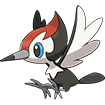 |
Route 2 Long Grass (Day) |
| 732 | 033 |
Trumbeak Normal/Flying |
Evolution Pikipek (Lv.14) |
|
| 733 | 034 |
Toucannon Normal/Flying |
Evolution Trumbeak (Lv.28) |
|
| 734 | 205 |
Yungoos Normal |
Route 7 Long Grass (Day) |
|
| 735 | 206 |
Gumshoos Normal |
Route 7 Long Grass (Day) Evolution Yungoos (Lv.20, Day) |
|
| 736 | 241 |
Grubbin Bug |
Route 9 Long Grass (Day and Night) |
|
| 737 | 242 |
Charjabug Bug/Electric |
Evolution Grubbin (Lv.20) |
|
| 738 | 243 |
Vikavolt Bug/Electric |
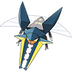 |
Evolution Charjabug (Thunder Stone, or leveled in Thundercap Mountain) |
| 739 | 237 |
Crabrawler Fighting |
 |
Breeding Crabominable |
| 740 | 238 |
Crabominable Fighting/Ice |
Frozen Forest Encounter (Thursday) or during Mission #043: Nine Tales of Snow Evolution Crabrawler (Ice Stone) |
|
| 741 | 083 |
Oricorio Fire/Flying (Baile Style) Electric/Flying (Pom-Pom Style) Psychic/Flying (Pa’u Style) Ghost/Flying (Sensu Style) |
|
Route 9 Red Flowers (Day and Night) (Baile Style) Yellow Flowers (Day and Night) (Pom-Pom Style) Pink Flowers (Day and Night) (Pa’u Style) Pink-Purple and Blue-Yellow Flowers (Day and Night) (Sensu Style) Style Change Nectar |
| 742 | 081 |
Cutiefly Bug/Fairy |
Flower Paradise All Flowers (Day and Night) |
|
| 743 | 082 |
Ribombee Bug/Fairy |
Evolution Cutiefly (Lv.25) |
|
| 744 | 334 |
Rockruff Rock |
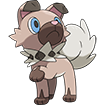 |
Route 12 Long Grass (Day and Night) |
| 745 | 335 |
Lycanroc Rock (Midday Form) Rock (Midnight Form) Rock (Dusk Form) |
 |
Evolution Rockruff (Lv.25, from 04:00-16:59) (Midday Form) Rockruff (Lv.25, from 20:00-03:59) (Midnight Form) Rockruff (Lv.25, from 17:00-19:59) (Dusk Form) |
| 746 | 289 |
Wishiwashi Water |
Route 9, 10, Tehl Town, Auburn Waterway Good Rod, Super Rod |
|
| 747 | 481 |
Mareanie Poison/Water |
Route 14, Ruins of Void Underwater |
|
| 748 | 482 |
Toxapex Poison/Water |
Route 14, Ruins of Void Underwater Evolution Mareanie (Lv.38) |
|
| 749 | – |
Mudbray Ground |
Breeding Mudsdale |
|
| 750 | – |
Mudsdale Ground |
 |
Magnolia Fields Long Grass (Day and Night) Evolution Mudbray (Lv.30) |
| 751 | 066 |
Dewpider Water/Bug |
Route 3 Long Grass (Day) |
|
| 752 | 067 |
Araquanid Water/Bug |
 |
Route 3 Surf Evolution Dewpider (Lv.22) |
| 753 | – |
Fomantis Grass |
Breeding Lurantis |
|
| 754 | – |
Lurantis Grass |
Victory Road Long Grass (Day and Night) Evolution Fomantis (Lv.34, Day) |
|
| 755 | 444 |
Morelull Grass/Fairy |
 |
Vivill Woods Encounter (½ chance of it or a Foonguss) |
| 756 | 445 |
Shiinotic Grass/Fairy |
Trade Vivill Town, for Amoonguss Evolution Morelull (Lv.24) |
|
| 757 | 140 |
Salandit Poison/Fire |
 |
Cinder Volcano Cave |
| 758 | 141 |
Salazzle Poison/Fire |
Victory Road Cave Evolution Salandit, female only (Lv.33) |
|
| 759 | 048 |
Stufful Normal/Fighting |
Route 2 Long Grass (Day and Night) |
|
| 760 | 049 |
Bewear Normal/Fighting |
Evolution Stufful (Lv.27) |
|
| 761 | – |
Bounsweet Grass |
Safari Zone Easy |
|
| 762 | – |
Steenee Grass |
 |
Safari Zone Medium Evolution Bounsweet (Lv.18) |
| 763 | – |
Tsareena Grass |
Evolution Steenee (leveled knowing Stomp) |
|
| 764 | 092 |
Comfey Fairy |
Flower Paradise All Flowers (Day and Night) |
|
| 765 | – |
Oranguru Normal/Psychic |
Redwood Forest Long Grass (Day and Night) |
|
| 766 | – |
Passimian Fighting |
Redwood Forest Long Grass (Day and Night) |
|
| 767 | – |
Wimpod Bug/Water |
Breeding Golisopod |
|
| 768 | – |
Golisopod Bug/Water |
 |
Safari Zone Hard, Insane Evolution Wimpod (Lv.30) |
| 769 | 074 |
Sandygast Ghost/Ground |
 |
Route 3 Sand Encounter (Monday, Tuesday) Dehara Beach Sand Castle Encounter (Wednesday, Sunday) |
| 770 | 075 |
Palossand Ghost/Ground |
Evolution Sandygast (Lv.42) |
|
| 771 | 394 |
Pyukumuku Water |
 |
Fallshore City, Dehara City Surf |
| 772 | – |
Type: Null Normal |
Mission Reward Complete 20 Missions then talk to Mission HQ Ranger |
|
| 773 | – |
Silvally Normal |
Evolution Type: Null (Max Happiness) |
|
| 774 | 008 |
Minior Rock/Flying |
 |
Route 1, 8, Victory Road Long Grass (Day and Night) |
| 775 | – |
Komala Normal |
Redwood Forest Long Grass (Day and Night) |
|
| 776 | – |
Turtonator Fire/Dragon |
Victory Road Cave |
|
| 777 | 268 |
Togedemaru Electric/Steel |
 |
Route 11 Long Grass (Day and Night) |
| 778 | – |
Mimikyu Ghost/Fairy |
Seaport City Warehouse Encounter |
|
| 779 | – |
Bruxish Water/Psychic |
 |
Route 9, 10, Tehl Town, Auburn Waterway, Victory Road Super Rod |
| 780 | – |
Drampa Normal/Dragon |
 |
Victory Road Cave |
| 781 | – |
Dhelmise Ghost/Grass |
Vivill Warehouse Super Rod |
|
| 782 | – |
Jangmo-o Dragon |
Breeding Hakamo-o |
|
| 783 | – |
Hakamo-o Dragon/Fighting |
 |
Victory Road Cave Evolution Jangmo-o (Lv.35) |
| 784 | – |
Kommo-o Dragon/Fighting |
Evolution Hakamo-o (Lv.45) |
|
| 785 | – |
Tapu Koko Electric/Fairy |
Post-Game Portal Cliff Cave |
|
| 786 | – |
Tapu Lele Psychic/Fairy |
Post-Game Portal Route 17 |
|
| 787 | – |
Tapu Bulu Grass/Fairy |
Post-Game Portal Route 9 |
|
| 788 | – |
Tapu Fini Water/Fairy |
Post-Game Portal Route 2 |
|
| 789 | – |
Cosmog Psychic |
Route 12 Bag on Beach |
|
| 790 | – |
Cosmoem Psychic |
Evolution Cosmog (Lv.43) |
|
| 791 | – |
Solgaleo Psychic/Steel |
Post-Game Portal Route 12 Beach, Day, Lunala in party Evolution Cosmoem (Lv.53, Day) |
|
| 792 | – |
Lunala Psychic/Ghost |
Post-Game Portal Route 12 Beach, Night, Solgaleo in party Evolution Cosmoem (Lv.53, Night) |
|
| 793 | – |
Nihilego Rock/Poison |
Post-Game Portal Route 14 Underwater, Night |
|
| 794 | – |
Buzzwole Bug/Fighting |
Post-Game Portal Route 4 West Waterfall Top, Day |
|
| 795 | – |
Pheromosa Bug/Fighting |
Post-Game Portal Great Desert, Day |
|
| 796 | – |
Xurkitree Electric |
 |
Post-Game Portal Thundercap Mountain, Night |
| 797 | – |
Celesteela Steel/Flying |
 |
Post-Game Portal Crater Town, Night |
| 798 | – |
Kartana Grass/Steel |
Post-Game Portal Crater, Day |
|
| 799 | – |
Guzzlord Dark/Dragon |
Post-Game Portal Crater, Night |
|
| 800 | – |
Necrozma Psychic Psychic/Steel (Dusk Mane) Psychic/Ghost (Dawn Wings) |
Post-Game Portal Frost Mountain, Night, Solgaleo and Lunala in party |
|
| 801 | 496 |
Magearna Steel/Fairy Steel/Fairy (Original Color) |
|
Tomb of Borrius Burial Chamber, during Mission #076: Tomb Raider Mission Reward Mission #069: The National Pokedex (Original Color) |
| 802 | – |
Marshadow Fighting/Ghost |
Post-Game Mystery Gift Code 5GQ3CU5UZ7WS |
|
| 803 | – |
Poipole Poison |
Post-Game Mystery Gift Code 4QP1SH1BN8JF |
|
| 804 | – |
Naganadel Poison/Dragon |
 |
Evolution Poipole (leveled knowing Dragon Pulse) |
| 805 | – |
Stakataka Rock/Steel |
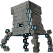 |
Post-Game Portal Route 7, Day |
| 806 | – |
Blacephalon Fire/Ghost |
Post-Game Portal Magnolia Fields, Day |
|
| 807 | 497 |
Zeraora Electric |
Post-Game Portal Thundercap Mountain 4F, Day |
|
| 808 | – |
Meltan Steel |
Post-Game Mystery Gift Code 8VE4VF5PA4NH |
|
| 809 | – |
Melmetal Steel |
Evolution Meltan (Metal Coat) |
|
| Post-Game Gen 8 Pokémon – Requires Gen 8 Activation | ||||
| 810 | – |
Grookey Grass |
 |
Breeding Thwackey |
| 811 | – |
Thwackey Grass |
Redwood Forest Long Grass (Day and Night) Evolution Grookey (Lv.16) |
|
| 812 | – |
Rillaboom Grass |
Evolution Thwackey (Lv.35) |
|
| 813 | – |
Scorbunny Fire |
Breeding Raboot |
|
| 814 | – |
Raboot Fire |
Redwood Forest Long Grass (Day and Night) Evolution Scorbunny (Lv.16) |
|
| 815 | – |
Cinderace Fire |
Evolution Raboot (Lv.35) |
|
| 816 | – |
Sobble Water |
Breeding Drizzile |
|
| 817 | – |
Drizzile Water |
Redwood Forest Long Grass (Day and Night) Evolution Sobble (Lv.16) |
|
| 818 | – |
Inteleon Water |
Evolution Drizzile (Lv.35) |
|
| 819 | – |
Skwovet Normal |
Route 3 Long Grass (Day and Night) |
|
| 820 | – |
Greedent Normal |
Evolution Skwovet (Lv.24) |
|
| 821 | – |
Rookidee Flying |
Breeding Corvisquire |
|
| 822 | – |
Corvisquire Flying |
Victory Road Long Grass (Day and Night) Evolution Rookidee (Lv.16) |
|
| 823 | – |
Corviknight Flying/Steel |
Evolution Corvisquire (Lv.38) |
|
| 824 | – |
Blipbug Bug |
Grim Woods Long Grass (Day and Night) |
|
| 825 | – |
Dottler Bug/Psychic |
Evolution Blipbug (Lv.10) |
|
| 826 | – |
Orbeetle Bug/Psychic |
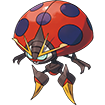 |
Evolution Dottler (Lv.30) |
| 827 | – |
Nickit Dark |
Route 5 Long Grass (Day and Night) |
|
| 828 | – |
Thievul Dark |
Evolution Nickit (Lv.18) |
|
| 829 | – |
Gossifleur Grass |
Breeding Eldegoss Route 14 Long Grass (Day and Night) |
|
| 830 | – |
Eldegoss Grass |
Evolution Gossifleur (Lv.20) |
|
| 831 | – |
Wooloo Normal |
Breeding Dubwool |
|
| 832 | – |
Dubwool Normal |
Magnolia Fields Tall Grass, Raid Den Evolution |
|
| 833 | – |
Chewtle Water |
Route 3 Long Grass (Day and Night) |
|
| 834 | – |
Drednaw Water/Rock |
Evolution Chewtle (Lv.22) |
|
| 835 | – |
Yamper Electric |
 |
Route 5 Long Grass (Day and Night) |
| 836 | – |
Boltund Electric |
Evolution Yamper (Lv.25) |
|
| 837 | – |
Rolycoly Rock |
Cinder Volcano Cave |
|
| 838 | – |
Carkol Rock/Fire |
Evolution Rolycoly (Lv.18) |
|
| 839 | – |
Coalossal Rock/Fire |
Evolution Carkol (Lv.34) |
|
| 840 | – |
Applin Grass/Dragon |
Route 12 Long Grass (Day and Night) |
|
| 841 | – |
Flapple Grass/Dragon |
Evolution Applin (Tart Apple) |
|
| 842 | – |
Appletun Grass/Dragon |
Evolution Applin (Sweet Apple) |
|
| 843 | – |
Silicobra Ground |
Great Desert Sands (Day and Night) |
|
| 844 | – |
Sandaconda Ground |
Evolution Silicobra (Lv.36) |
|
| 845 | – |
Cramorant Flying/Water |
Auburn Waterway, Route 10 Long Grass (Day and Night) |
|
| 846 | – |
Arrokuda Water |
Route 9 Long Grass (Day and Night) |
|
| 847 | – |
Barraskewda Water |
Evolution Arrokuda (Lv.26) |
|
| 848 | – |
Toxel Electric/Poison |
Route 9 Long Grass (Day and Night) |
|
| 849 | – |
Toxtricity Electric/Poison |
Evolution Toxel (Lv.30) |
|
| 850 | – |
Sizzlipede Fire/Bug |
Route 4 Long Grass (Day and Night) |
|
| 851 | – |
Centiskorch Fire/Bug |
Evolution Sizzlipede (Lv.28) |
|
| 852 | – |
Clobbopus Fighting |
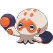 |
Route 2 Long Grass (Day and Night) |
| 853 | – |
Grapploct Fighting |
Evolution Clobbopus (leveled knowing Taunt) |
|
| 854 | – |
Sinistea Ghost |
Rift Cave Cave |
|
| 855 | – |
Polteageist Ghost |
Evolution Sinistea (Cracked Pot or Chipped Pot) |
|
| 856 | – |
Hatenna Psychic |
Breeding Hattrem |
|
| 857 | – |
Hattrem Psychic |
Vivill Woods Long Grass (Day and Night) Evolution Hatenna (Lv.32) |
|
| 858 | – |
Hatterene Psychic/Fairy |
Evolution Hattrem (Lv.42) |
|
| 859 | – |
Impidimp Dark/Fairy |
Vivill Woods Long Grass (Day and Night) |
|
| 860 | – |
Morgrem Dark/Fairy |
Evolution Impidimp (Lv.32) |
|
| 861 | – |
Grimmsnarl Dark/Fairy |
Evolution Morgrem (Lv.42) |
|
| 862 | – |
Obstagoon Dark/Normal |
Route 10 Long Grass (Day and Night) Evolution Galarian Linoone (Lv.35, Night) |
|
| 863 | – |
Perrserker Steel |
Evolution Galarian Meowth (Lv.28) |
|
| 864 | – |
Cursola Ghost |
Route 16 Underwater Evolution Galarian Corsola (Lv.38) |
|
| 865 | – |
Sirfetch’d Fighting |
Route 17 Long Grass (Day and Night) (Gen 8 Activation) Evolution Galarian Farfetch’d (leveled after landing 3 critical hits in a single battle) |
|
| 866 | – |
Mr. Rime Ice/Psychic |
Evolution Galarian Mr. Mime (Lv.42) |
|
| 867 | – |
Runerigus Ground/Ghost |
Ruins of Void Encounter Evolution Galarian Yamask (Lv.35) |
|
| 868 | – |
Milcery Fairy |
Route 11 Long Grass (Day and Night) |
|
| 869 | – |
Alcremie Fairy |
 |
Evolution Milcery (leveled holding a Sweet) |
| 870 | – |
Falinks Fighting |
Route 16 Long Grass (Day and Night) |
|
| 871 | – |
Pincurchin Electric |
Thundercap Mountain Cave |
|
| 872 | – |
Snom Ice/Bug |
Frozen Forest Long Grass (Day and Night) |
|
| 873 | – |
Frosmoth Ice/Bug |
Evolution Snom (High Friendship, Night) |
|
| 874 | – |
Stonjourner Rock |
Route 18 Long Grass (Day and Night) |
|
| 875 | – |
Eiscue Ice |
Icy Hole Long Grass (Day and Night) |
|
| 876 | – |
Indeedee Psychic/Normal |
Route 7 Long Grass (Day and Night) |
|
| 877 | – |
Morpeko Electric/Dark |
Route 6 Long Grass (Day and Night) |
|
| 878 | – |
Cufant Steel |
Breeding Copperajah |
|
| 879 | – |
Copperajah Steel |
Route 16 Long Grass (Day and Night) Evolution Cufant (Lv.34) |
|
| 880 | – |
Dracozolt Electric/Dragon |
Crystal Peak Cave |
|
| 881 | – |
Arctozolt Electric/Ice |
Crystal Peak Cave |
|
| 882 | – |
Dracovish Water/Dragon |
Cube Corp. Surf |
|
| 883 | – |
Arctovish Water/Ice |
Cube Corp. Surf |
|
| 884 | – |
Duraludon Steel/Dragon |
Crystal Peak Cave |
|
| 885 | – |
Dreepy Dragon/Ghost |
Breeding Drakloak |
|
| 886 | – |
Drakloak Dragon/Ghost |
 |
Victory Road Cave Evolution Dreepy (Lv.50) |
| 887 | – |
Dragapult Dragon/Ghost |
Evolution Drakloak (Lv.60) |
|
| 888 | – |
Zacian Fairy |
 |
Unbound Cloud Trade |
| 889 | – |
Zamazenta Fighting |
Unbound Cloud Trade |
|
| 890 | – |
Eternatus Poison/Dragon |
Unbound Cloud Trade |
|
| 891 | – |
Kubfu Fighting |
Unbound Cloud Trade |
|
| 892 | – |
Urshifu Fighting/Dark (Single-Strike Style) Fighting/Water (Rapid-Strike Style) |
|
Evolution Kubfu (Dusk Stone) (Single-Strike Style) Kubfu (Water Stone) (Rapid-Strike Style) |
| 893 | – |
Zarude Water |
Post-Game Mystery Gift Code 3YT4BV7PH4UT |
|
| 894 | – |
Regieleki Electric |
Icy Hole Encounter, Regigias must be caught |
|
| 895 | – |
Regidrago Dragon |
Icy Hole Encounter, Regigias must be caught |
|
| 896 | – |
Glastrier Ice |
Unbound Cloud Trade |
|
| 897 | – |
Spectrier Ghost |
Unbound Cloud Trade |
|
| 898 | – |
Calyrex Psychic/Grass Psychic/Ice (Ice Rider) Psychic/Ghost (Shadow Rider) |
Unbound Cloud Trade |
|
| 899 | – |
Wyrdeer Normal/Psychic |
Evolution Stantler (leveled knowing Psyshield Bash) |
|
| 900 | – |
Kleavor Bug/Rock |
Evolution Scyther (Black Augurite) |
|
| 901 | – |
Ursaluna Ground/Normal |
Evolution Ursaring (Peat Block, Night) |
|
| 902 | – |
Basculegion Water/Ghost |
Evolution Hisuian Basculin (leveled knowing Wave Crash) |
|
| 903 | – |
Sneasler Fighting/Poison |
Evolution Sneasel (Razor Claw, Day) |
|
| 904 | – |
Overqwil Dark/Poison |
Evolution Hisuian Qwilfish (leveled knowing Barb Barrage) |
|
| 905 | – |
Enamorus Fairy/Flying |
Magnolia Fields Encounter with Landorus in party |
|